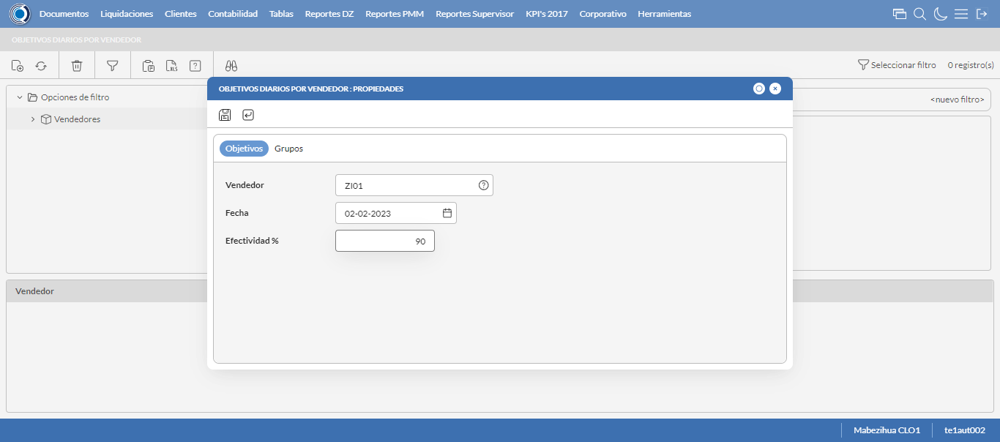
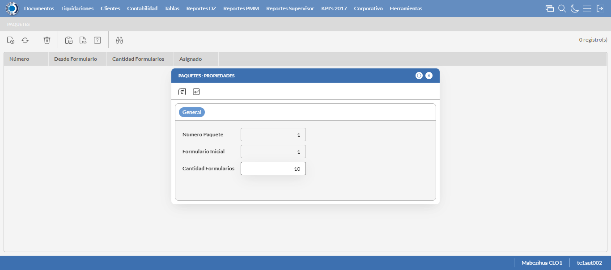
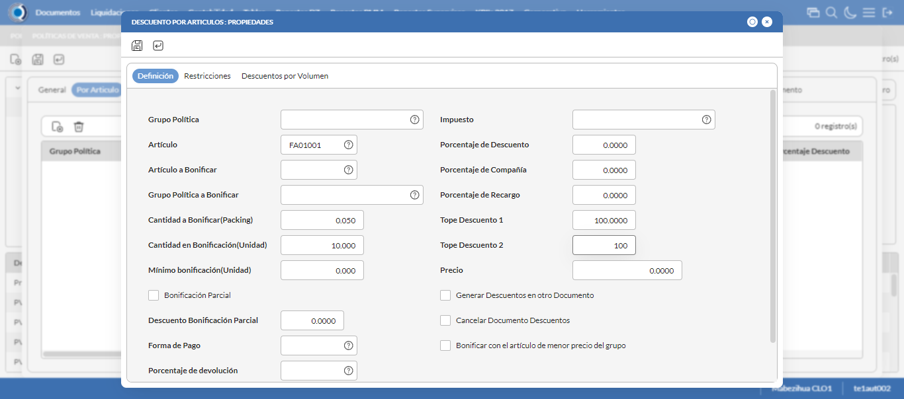
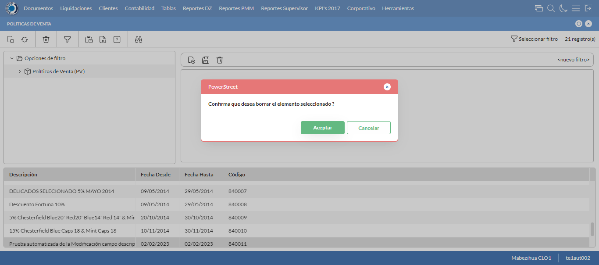
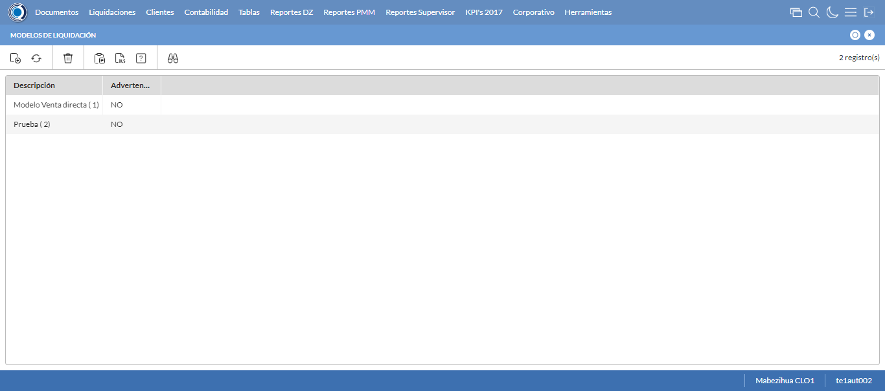
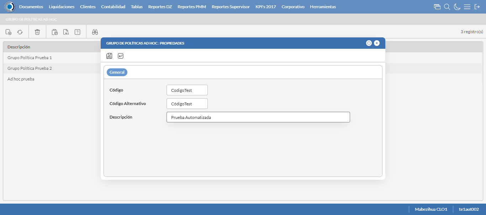
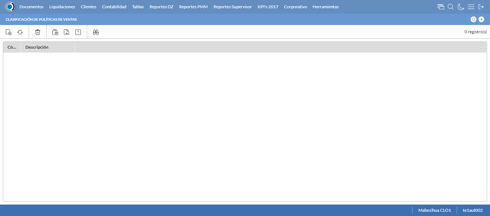
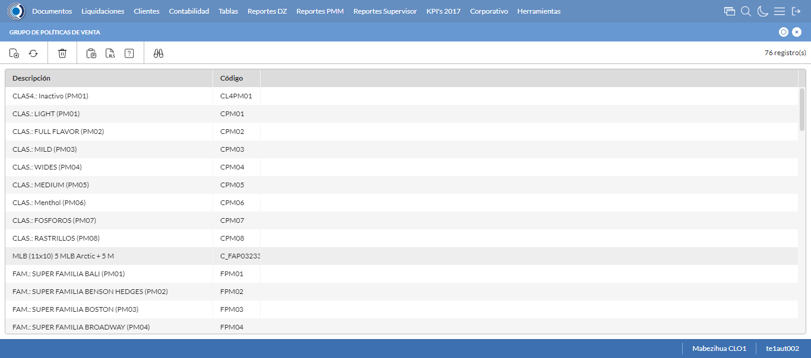
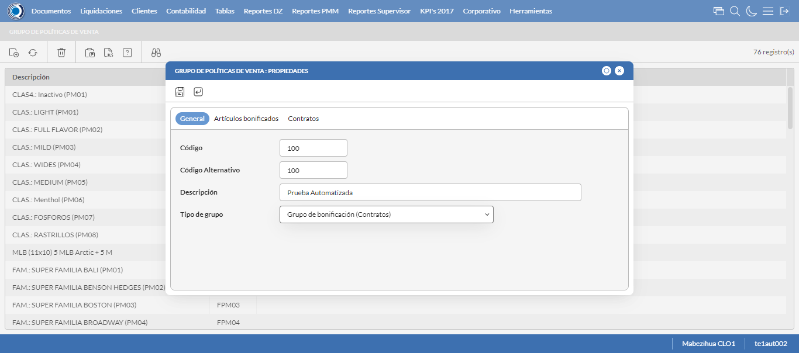
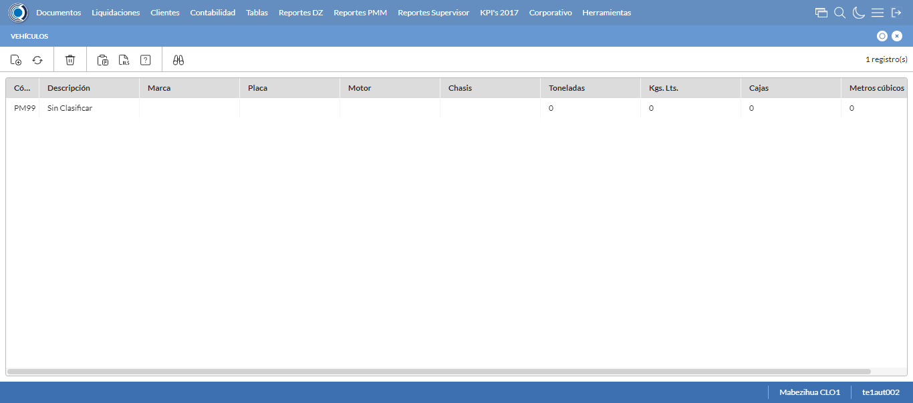

Desarrollado por : Area de Testing PWST
Fecha y hora de inicio : 2023-02-02 11:04:52
Duracion : 0:12:32.637216
Resultado : Total 127，Correctos 72 ，Errores 55 ，Taza de resultado 56.69%
Resumen 56.69% Errores 55 Fallidos 0 Correctos 72 Test realizados 127
| Caso de Prueba | Total | Correctos | Fallido | Error | Detalles | Captura del error |
| ScriptAmarillo.Test: Script Amarillo | 127 | 72 | 0 | 55 | Detalles | |
test |
ft1_1: 2023-02-02 11:04:54,573 - root - INFO - Se abre el chrome
2023-02-02 11:04:55,488 - root - INFO - Entra a la URL
2023-02-02 11:04:55,611 - root - INFO - Maximiza la pantalla
Traceback (most recent call last):
File "C:\Users\gerar\AppData\Local\Programs\Python\Python311\Lib\site-packages\selenium\webdriver\remote\switch_to.py", line 88, in frame
frame_reference = self._driver.find_element(By.ID, frame_reference)
^^^^^^^^^^^^^^^^^^^^^^^^^^^^^^^^^^^^^^^^^^^^^^^^^
File "C:\Users\gerar\AppData\Local\Programs\Python\Python311\Lib\site-packages\selenium\webdriver\remote\webdriver.py", line 861, in find_element
return self.execute(Command.FIND_ELEMENT, {"using": by, "value": value})["value"]
^^^^^^^^^^^^^^^^^^^^^^^^^^^^^^^^^^^^^^^^^^^^^^^^^^^^^^^^^^^^^^^^^
File "C:\Users\gerar\AppData\Local\Programs\Python\Python311\Lib\site-packages\selenium\webdriver\remote\webdriver.py", line 444, in execute
self.error_handler.check_response(response)
File "C:\Users\gerar\AppData\Local\Programs\Python\Python311\Lib\site-packages\selenium\webdriver\remote\errorhandler.py", line 249, in check_response
raise exception_class(message, screen, stacktrace)
selenium.common.exceptions.NoSuchElementException: Message: no such element: Unable to locate element: {"method":"css selector","selector":"[id="mainFrame"]"}
(Session info: chrome=109.0.5414.120)
Stacktrace:
Backtrace:
(No symbol) [0x0037F243]
(No symbol) [0x00307FD1]
(No symbol) [0x001FD04D]
(No symbol) [0x0022C0B0]
(No symbol) [0x0022C22B]
(No symbol) [0x0025E612]
(No symbol) [0x002485D4]
(No symbol) [0x0025C9EB]
(No symbol) [0x00248386]
(No symbol) [0x0022163C]
(No symbol) [0x0022269D]
GetHandleVerifier [0x00619A22+2655074]
GetHandleVerifier [0x0060CA24+2601828]
GetHandleVerifier [0x00428C0A+619850]
GetHandleVerifier [0x00427830+614768]
(No symbol) [0x003105FC]
(No symbol) [0x00315968]
(No symbol) [0x00315A55]
(No symbol) [0x0032051B]
BaseThreadInitThunk [0x75C77D69+25]
RtlInitializeExceptionChain [0x7752BB9B+107]
RtlClearBits [0x7752BB1F+191]
During handling of the above exception, another exception occurred:
Traceback (most recent call last):
File "C:\Users\gerar\AppData\Local\Programs\Python\Python311\Lib\site-packages\selenium\webdriver\remote\switch_to.py", line 91, in frame
frame_reference = self._driver.find_element(By.NAME, frame_reference)
^^^^^^^^^^^^^^^^^^^^^^^^^^^^^^^^^^^^^^^^^^^^^^^^^^^
File "C:\Users\gerar\AppData\Local\Programs\Python\Python311\Lib\site-packages\selenium\webdriver\remote\webdriver.py", line 861, in find_element
return self.execute(Command.FIND_ELEMENT, {"using": by, "value": value})["value"]
^^^^^^^^^^^^^^^^^^^^^^^^^^^^^^^^^^^^^^^^^^^^^^^^^^^^^^^^^^^^^^^^^
File "C:\Users\gerar\AppData\Local\Programs\Python\Python311\Lib\site-packages\selenium\webdriver\remote\webdriver.py", line 444, in execute
self.error_handler.check_response(response)
File "C:\Users\gerar\AppData\Local\Programs\Python\Python311\Lib\site-packages\selenium\webdriver\remote\errorhandler.py", line 249, in check_response
raise exception_class(message, screen, stacktrace)
selenium.common.exceptions.NoSuchElementException: Message: no such element: Unable to locate element: {"method":"css selector","selector":"[name="mainFrame"]"}
(Session info: chrome=109.0.5414.120)
Stacktrace:
Backtrace:
(No symbol) [0x0037F243]
(No symbol) [0x00307FD1]
(No symbol) [0x001FD04D]
(No symbol) [0x0022C0B0]
(No symbol) [0x0022C22B]
(No symbol) [0x0025E612]
(No symbol) [0x002485D4]
(No symbol) [0x0025C9EB]
(No symbol) [0x00248386]
(No symbol) [0x0022163C]
(No symbol) [0x0022269D]
GetHandleVerifier [0x00619A22+2655074]
GetHandleVerifier [0x0060CA24+2601828]
GetHandleVerifier [0x00428C0A+619850]
GetHandleVerifier [0x00427830+614768]
(No symbol) [0x003105FC]
(No symbol) [0x00315968]
(No symbol) [0x00315A55]
(No symbol) [0x0032051B]
BaseThreadInitThunk [0x75C77D69+25]
RtlInitializeExceptionChain [0x7752BB9B+107]
RtlClearBits [0x7752BB1F+191]
During handling of the above exception, another exception occurred:
Traceback (most recent call last):
File "C:\xampp\htdocs\versiones\automatizaciones\AutoPWST\ScriptAmarillo\testCase\ScriptAmarillo.py", line 308, in test
self.driver.switch_to.frame("mainFrame")
File "C:\Users\gerar\AppData\Local\Programs\Python\Python311\Lib\site-packages\selenium\webdriver\remote\switch_to.py", line 93, in frame
raise NoSuchFrameException(frame_reference)
selenium.common.exceptions.NoSuchFrameException: Message: mainFrame
|
|
||||
test_000: Ingresa a la base de datos |
pt1_2: 2023-02-02 11:04:58,766 - root - INFO - Escribe el usuario
2023-02-02 11:04:58,834 - root - INFO - Escribe la contraseña
2023-02-02 11:04:58,896 - root - INFO - Se dio clic en el boton ingresar
2023-02-02 11:05:00,596 - root - INFO - Ejecutar Enterprise
2023-02-02 11:05:04,632 - root - INFO - Cambia entre pestañas
|
|
||||
test_001: Ingresa a pantalla Objetivos Diarios |
pt1_3: 2023-02-02 11:05:08,553 - root - INFO - Abre la pantalla de Objetivos Diarios
2023-02-02 11:05:09,093 - root - INFO - La pantalla ejecutada es Lista de precios.
2023-02-02 11:05:09,094 - root - INFO - Captura: C:\xampp\htdocs\versiones\automatizaciones\AutoPWST\ScriptAmarillo\report\img screen：20230202_11_05_09.png
2023-02-02 11:05:09,233 - root - INFO - Se presiona el boton 'Refrescar', para crear un nuevo registro igual al anterior.
2023-02-02 11:05:19,570 - root - INFO - Se presiona el boton 'Nuevo', para crear un nuevo registro.
|

|
||||
test_002: Agregar Objetivos Diarios |
pt1_4: 2023-02-02 11:05:20,104 - root - INFO - Se abrio la pantalla para el ingreso de un registro nuevo.
2023-02-02 11:05:20,129 - root - INFO - El campo 'Vendedor' si se encuentra visible.
2023-02-02 11:05:20,154 - root - INFO - El campo 'Fecha' si se encuentra visible.
2023-02-02 11:05:20,179 - root - INFO - El campo 'Efectividad %' si se encuentra visible.
2023-02-02 11:05:21,134 - root - INFO - Ingresa la efectividad del nuevo registro
2023-02-02 11:05:23,136 - root - INFO - Captura: C:\xampp\htdocs\versiones\automatizaciones\AutoPWST\ScriptAmarillo\report\img screen：20230202_11_05_23.png
2023-02-02 11:05:23,293 - root - INFO - Se hace el cambio de pestaña para continuar con el registro nuevo
2023-02-02 11:05:23,868 - root - INFO - Se presiona el boton 'Nuevo', para crear un nuevo registro.
2023-02-02 11:05:24,408 - root - INFO - El campo 'Grupo Política' si se encuentra visible.
2023-02-02 11:05:24,435 - root - INFO - El campo 'Tipo Objetivo' si se encuentra visible.
2023-02-02 11:05:24,461 - root - INFO - El campo 'Tipo Unidad' si se encuentra visible.
2023-02-02 11:05:24,488 - root - INFO - El campo 'Objetivo Cantidad' si se encuentra visible.
2023-02-02 11:05:24,515 - root - INFO - El campo 'Objetivo Cobertura' si se encuentra visible.
2023-02-02 11:05:26,610 - root - INFO - Ingresa el Objetivo Cantidad del nuevo registro
2023-02-02 11:05:26,679 - root - INFO - Ingresa el Objetivo Cobertura del nuevo registro
2023-02-02 11:05:26,740 - root - INFO - Se da clic en el boton Guardar; se debe crear un nuevo registro.
2023-02-02 11:05:26,951 - root - INFO - Se da clic en el boton Guardar; se debe crear un nuevo registro.
|
 | ||||
test_003: Repetir Registro Objetivos Diarios |
pt1_5: 2023-02-02 11:05:27,180 - root - INFO - Se presiona el boton 'Refrescar', para crear un nuevo registro igual al anterior.
2023-02-02 11:05:27,356 - root - INFO - Se presiona el boton 'Nuevo', para crear un nuevo registro igual al anterior.
2023-02-02 11:05:27,900 - root - INFO - Se abrio la pantalla para el ingreso de un registro nuevo.
2023-02-02 11:05:27,931 - root - INFO - El campo 'Vendedor' si se encuentra visible.
2023-02-02 11:05:27,959 - root - INFO - El campo 'Fecha' si se encuentra visible.
2023-02-02 11:05:27,985 - root - INFO - El campo 'Efectividad %' si se encuentra visible.
2023-02-02 11:05:28,962 - root - INFO - Ingresa la efectividad del nuevo registro
2023-02-02 11:05:29,256 - root - INFO - Se da clic en el boton Guardar; se debe crear un nuevo registro.
2023-02-02 11:05:30,257 - root - INFO - Captura: C:\xampp\htdocs\versiones\automatizaciones\AutoPWST\ScriptAmarillo\report\img screen：20230202_11_05_30.png
2023-02-02 11:05:35,569 - root - INFO - Se presiona el boton 'Cerrar', para cerrar el mensaje de duplicidad de llave primaria
2023-02-02 11:05:36,569 - root - INFO - Captura: C:\xampp\htdocs\versiones\automatizaciones\AutoPWST\ScriptAmarillo\report\img screen：20230202_11_05_36.png
2023-02-02 11:05:36,718 - root - INFO - Se presiona el boton 'Cerrar', para cerrar el mensaje de duplicidad de llave primaria
2023-02-02 11:05:36,834 - root - INFO - Se presiona el boton 'Cerrar', para cerrar la ventana
|
|||||
test_004: Modifica Objetivos Diarios |
pt1_6: 2023-02-02 11:05:36,940 - root - INFO - Se presiona el boton 'Refrescar', para crear un nuevo registro igual al anterior.
2023-02-02 11:05:38,532 - root - INFO - Se da clic en el registro creado, para proceder a modificarlo.
2023-02-02 11:05:39,132 - root - INFO - Ingresa la efectividad del nuevo registro
2023-02-02 11:05:41,133 - root - INFO - Captura: C:\xampp\htdocs\versiones\automatizaciones\AutoPWST\ScriptAmarillo\report\img screen：20230202_11_05_41.png
2023-02-02 11:05:41,278 - root - INFO - Se hace el cambio de pestaña para continuar con el registro nuevo
2023-02-02 11:05:42,353 - root - INFO - Se da clic en el registro creado, para proceder a modificarlo.
2023-02-02 11:05:44,776 - root - INFO - Ingresa el Objetivo Cantidad del nuevo registro
2023-02-02 11:05:44,865 - root - INFO - Ingresa el Objetivo Cobertura del nuevo registro
2023-02-02 11:05:44,909 - root - INFO - Se da clic en el boton Guardar; se debe crear un nuevo registro.
2023-02-02 11:05:45,166 - root - INFO - Se da clic en el boton Guardar; se debe modificar la informacion del registro.
|

|
||||
test_005: Elimina Objetivos Diarios |
pt1_7: 2023-02-02 11:05:45,411 - root - INFO - Se presiona el boton 'Refrescar', para proceder a eliminar el registro.
2023-02-02 11:05:46,996 - root - INFO - Se da clic en el registro creado, para proceder a eliminarlo.
2023-02-02 11:05:47,046 - root - INFO - Se presiona el boton 'Eliminar', para eliminar el registro.
2023-02-02 11:05:49,047 - root - INFO - Captura: C:\xampp\htdocs\versiones\automatizaciones\AutoPWST\ScriptAmarillo\report\img screen：20230202_11_05_49.png
2023-02-02 11:05:49,193 - root - INFO - Se confirma el eliminado del registro
2023-02-02 11:05:49,612 - root - INFO - Se presiona el boton 'Refrescar', para crear un nuevo registro igual al anterior.
2023-02-02 11:05:51,670 - root - INFO - Se presiona el boton 'Cerrar', para cerrar la pantalla de Objetivos Diarios.
|

|
||||
test_006: Ingresa a pantalla Pop Ups |
pt1_8: 2023-02-02 11:05:54,578 - root - INFO - Abre la pantalla de PopUps
2023-02-02 11:05:55,637 - root - INFO - La pantalla ejecutada es PopUps.
2023-02-02 11:05:56,639 - root - INFO - Captura: C:\xampp\htdocs\versiones\automatizaciones\AutoPWST\ScriptAmarillo\report\img screen：20230202_11_05_56.png
2023-02-02 11:05:57,839 - root - INFO - Se ordenó por codigo.
2023-02-02 11:06:08,173 - root - INFO - Se presiona el boton 'Nuevo', para crear un nuevo registro.
|

|
||||
test_007: Agregar Pop Ups |
pt1_9: 2023-02-02 11:06:08,712 - root - INFO - Se abrio la pantalla para el ingreso de un registro nuevo.
2023-02-02 11:06:08,741 - root - INFO - El campo 'Codigo' si se encuentra visible.
2023-02-02 11:06:08,773 - root - INFO - El campo 'Orden' si se encuentra visible.
2023-02-02 11:06:08,829 - root - INFO - El campo 'Activo' si se encuentra visible.
2023-02-02 11:06:08,869 - root - INFO - El campo 'Descrición' si se encuentra visible.
2023-02-02 11:06:08,918 - root - INFO - El campo 'Modo Visualización' si se encuentra visible.
2023-02-02 11:06:08,958 - root - INFO - El campo 'Tipo Popup' si se encuentra visible.
2023-02-02 11:06:08,998 - root - INFO - El campo 'Fecha Desde' si se encuentra visible.
2023-02-02 11:06:09,028 - root - INFO - El campo 'Fecha Hasta' si se encuentra visible.
2023-02-02 11:06:09,058 - root - INFO - El campo 'Texto' si se encuentra visible.
2023-02-02 11:06:09,088 - root - INFO - El campo 'Seleccione Imagen' si se encuentra visible.
2023-02-02 11:06:09,142 - root - INFO - Ingresa el codigo del nuevo registro
2023-02-02 11:06:09,213 - root - INFO - Ingresa la orden del nuevo registro
2023-02-02 11:06:10,287 - root - INFO - Hizo click en el checkbox Activo
2023-02-02 11:06:10,470 - root - INFO - Ingresa la descripción del nuevo registro
2023-02-02 11:06:10,949 - root - INFO - Se dió click en la opción Pantalla Held.
2023-02-02 11:06:12,151 - root - INFO - Se dió doble click en el registro de Tipo Pop Up.
2023-02-02 11:06:12,427 - root - INFO - Ingresa el texto del nuevo registro
2023-02-02 11:06:13,428 - root - INFO - Captura: C:\xampp\htdocs\versiones\automatizaciones\AutoPWST\ScriptAmarillo\report\img screen：20230202_11_06_13.png
2023-02-02 11:06:13,581 - root - INFO - Se da clic en el boton Guardar; se debe crear un nuevo registro.
|
|||||
test_008: Repetir Registro Pop Ups |
pt1_10: 2023-02-02 11:06:13,885 - root - INFO - Se presiona el boton 'Refrescar', para crear un nuevo registro igual al anterior.
2023-02-02 11:06:14,496 - root - INFO - Se presiona el boton 'Nuevo', para crear un nuevo registro igual al anterior.
2023-02-02 11:06:15,042 - root - INFO - Se abrio la pantalla para el ingreso de un registro nuevo.
2023-02-02 11:06:15,068 - root - INFO - El campo 'Codigo' si se encuentra visible.
2023-02-02 11:06:15,094 - root - INFO - El campo 'Orden' si se encuentra visible.
2023-02-02 11:06:15,121 - root - INFO - El campo 'Activo' si se encuentra visible.
2023-02-02 11:06:15,146 - root - INFO - El campo 'Descrición' si se encuentra visible.
2023-02-02 11:06:15,172 - root - INFO - El campo 'Modo Visualización' si se encuentra visible.
2023-02-02 11:06:15,199 - root - INFO - El campo 'Tipo Popup' si se encuentra visible.
2023-02-02 11:06:15,227 - root - INFO - El campo 'Fecha Desde' si se encuentra visible.
2023-02-02 11:06:15,256 - root - INFO - El campo 'Fecha Hasta' si se encuentra visible.
2023-02-02 11:06:15,281 - root - INFO - El campo 'Texto' si se encuentra visible.
2023-02-02 11:06:15,306 - root - INFO - El campo 'Seleccione Imagen' si se encuentra visible.
2023-02-02 11:06:15,352 - root - INFO - Ingresa el codigo del nuevo registro
2023-02-02 11:06:15,414 - root - INFO - Ingresa la orden del nuevo registro
2023-02-02 11:06:16,491 - root - INFO - Hizo click en el checkbox Activo
2023-02-02 11:06:16,634 - root - INFO - Ingresa la descripción del nuevo registro
2023-02-02 11:06:16,963 - root - INFO - Se dió click en la opción Pantalla Hand Held.
2023-02-02 11:06:18,175 - root - INFO - Se dió doble click en el registro de Tipo PopUp.
2023-02-02 11:06:18,431 - root - INFO - Ingresa el texto del nuevo registro
2023-02-02 11:06:18,585 - root - INFO - Se da clic en el boton Guardar; NO se debe crear un nuevo registro.
2023-02-02 11:06:19,587 - root - INFO - Captura: C:\xampp\htdocs\versiones\automatizaciones\AutoPWST\ScriptAmarillo\report\img screen：20230202_11_06_19.png
2023-02-02 11:06:24,910 - root - INFO - Se presiona el boton 'Cerrar', para cerrar el mensaje de duplicidad de llave primaria
2023-02-02 11:06:25,912 - root - INFO - Captura: C:\xampp\htdocs\versiones\automatizaciones\AutoPWST\ScriptAmarillo\report\img screen：20230202_11_06_25.png
2023-02-02 11:06:26,073 - root - INFO - Se presiona el boton 'Cerrar', para cerrar el mensaje de duplicidad de llave primaria
2023-02-02 11:06:26,210 - root - INFO - Se presiona el boton 'Cerrar', para cerrar la ventana
|
|||||
test_009: Modifica Pop Ups |
pt1_11: 2023-02-02 11:06:26,340 - root - INFO - Se presiona el boton 'Refrescar', para proceder a modificar el registro.
2023-02-02 11:06:27,946 - root - INFO - Se dió dos veces click en el encabezado para modificar el orden de los registros.
2023-02-02 11:06:30,050 - root - INFO - Se da clic en el registro creado, para proceder a modificarlo.
2023-02-02 11:06:30,708 - root - INFO - Se modifica el contenido del campo Orden
2023-02-02 11:06:31,799 - root - INFO - Hizo click en el checkbox activo
2023-02-02 11:06:31,991 - root - INFO - Se modifica el contenido del campo Descripción
2023-02-02 11:06:32,340 - root - INFO - Se dió click en la opción Ambos.
2023-02-02 11:06:33,561 - root - INFO - Se dió doble click en el registro de Tipo PopUp.
2023-02-02 11:06:33,871 - root - INFO - Se modifica el contenido del campo Texto
2023-02-02 11:06:34,872 - root - INFO - Captura: C:\xampp\htdocs\versiones\automatizaciones\AutoPWST\ScriptAmarillo\report\img screen：20230202_11_06_34.png
2023-02-02 11:06:35,023 - root - INFO - Se da clic en el boton Guardar; se debe modificar la informacion del registro.
|
|||||
test_010: Elimina PopUps |
pt1_12: 2023-02-02 11:06:35,331 - root - INFO - Se presiona el boton 'Refrescar', para proceder a eliminar el registro.
2023-02-02 11:06:36,921 - root - INFO - Se da clic en el registro creado, para proceder a eliminarlo.
2023-02-02 11:06:36,991 - root - INFO - Se presiona el boton 'Eliminar', para eliminar el registro.
2023-02-02 11:06:38,993 - root - INFO - Captura: C:\xampp\htdocs\versiones\automatizaciones\AutoPWST\ScriptAmarillo\report\img screen：20230202_11_06_38.png
2023-02-02 11:06:39,170 - root - INFO - Se confirma el eliminado del registro
2023-02-02 11:06:41,225 - root - INFO - Se presiona el boton 'Refrescar', para veriicar si el registro ha sido eliminado.
2023-02-02 11:06:43,281 - root - INFO - Se presiona el boton 'Cerrar', para cerrar la pantalla de Pop Ups.
|

|
||||
test_011: Ingresa a pantalla Paquetes Formulario |
pt1_13: 2023-02-02 11:06:46,198 - root - INFO - Abre la pantalla de Paquetes de Formularios
2023-02-02 11:06:46,735 - root - INFO - Captura: C:\xampp\htdocs\versiones\automatizaciones\AutoPWST\ScriptAmarillo\report\img screen：20230202_11_06_46.png
2023-02-02 11:06:46,822 - root - INFO - La pantalla ejecutada es Zonas de Ventas.
2023-02-02 11:06:57,128 - root - INFO - Se presiona el boton 'Nuevo', para crear un nuevo registro.
|

|
||||
test_012: Agregar Paquetes Formulario |
pt1_14: 2023-02-02 11:06:57,665 - root - INFO - Se abrio la pantalla para el ingreso de un registro nuevo.
2023-02-02 11:06:57,691 - root - INFO - El campo 'Número Paquete' si se encuentra visible.
2023-02-02 11:06:57,721 - root - INFO - El campo 'Formulario Inicial' si se encuentra visible.
2023-02-02 11:06:57,750 - root - INFO - El campo 'Cantidad Formularios' si se encuentra visible.
2023-02-02 11:06:58,795 - root - INFO - Captura: C:\xampp\htdocs\versiones\automatizaciones\AutoPWST\ScriptAmarillo\report\img screen：20230202_11_06_58.png
2023-02-02 11:06:58,882 - root - INFO - Ingresa la cantidad de formularios del nuevo registro
2023-02-02 11:06:58,932 - root - INFO - Se da clic en el boton Guardar; se debe crear un nuevo registro.
|
 | ||||
test_013: Modifica Paquetes Formulario |
pt1_15: 2023-02-02 11:06:59,168 - root - INFO - Se presiona el boton 'Refrescar', para crear un nuevo registro igual al anterior.
2023-02-02 11:07:01,278 - root - INFO - Se da clic en el registro creado, para proceder a modificarlo.
2023-02-02 11:07:02,279 - root - INFO - Captura: C:\xampp\htdocs\versiones\automatizaciones\AutoPWST\ScriptAmarillo\report\img screen：20230202_11_07_02.png
2023-02-02 11:07:02,399 - root - INFO - Se presiona el boton 'Cerrar', para cerrar la ventana
|

|
||||
test_014: Elimina Paquetes Formulario |
pt1_16: 2023-02-02 11:07:02,577 - root - INFO - Se presiona el boton 'Refrescar', para proceder a eliminar el registro.
2023-02-02 11:07:04,175 - root - INFO - Se da clic en el registro creado, para proceder a eliminarlo.
2023-02-02 11:07:04,219 - root - INFO - Se presiona el boton 'Eliminar', para eliminar el registro.
2023-02-02 11:07:06,221 - root - INFO - Captura: C:\xampp\htdocs\versiones\automatizaciones\AutoPWST\ScriptAmarillo\report\img screen：20230202_11_07_06.png
2023-02-02 11:07:06,351 - root - INFO - Se confirma el eliminado del registro
2023-02-02 11:07:06,530 - root - INFO - Se presiona el boton 'Refrescar', para crear un nuevo registro igual al anterior.
2023-02-02 11:07:08,590 - root - INFO - Se presiona el boton 'Cerrar', para cerrar la pantalla de Paquetes.
|

|
||||
test_015: Ingresa a pantalla Perfiles Comision |
pt1_17: 2023-02-02 11:07:11,472 - root - INFO - Abre la pantalla de Perfiles de Comisión
2023-02-02 11:07:12,027 - root - INFO - La pantalla ejecutada es Perfiles de Comisión.
2023-02-02 11:07:12,027 - root - INFO - Captura: C:\xampp\htdocs\versiones\automatizaciones\AutoPWST\ScriptAmarillo\report\img screen：20230202_11_07_12.png
2023-02-02 11:07:22,485 - root - INFO - Se presiona el boton 'Nuevo', para crear un nuevo registro.
|

|
||||
test_016: Agregar Perfiles Comision |
pt1_18: 2023-02-02 11:07:23,033 - root - INFO - Se abrio la pantalla para el ingreso de un registro nuevo.
2023-02-02 11:07:23,063 - root - INFO - El campo 'Codigo' si se encuentra visible.
2023-02-02 11:07:23,090 - root - INFO - El campo 'Descrición' si se encuentra visible.
2023-02-02 11:07:23,117 - root - INFO - El campo 'Porcentaje Global' si se encuentra visible.
2023-02-02 11:07:23,146 - root - INFO - El campo 'Con impuesto' si se encuentra visible.
2023-02-02 11:07:23,175 - root - INFO - El campo 'Comisión Repartidor' si se encuentra visible.
2023-02-02 11:07:23,237 - root - INFO - Ingresa el codigo del nuevo registro
2023-02-02 11:07:23,315 - root - INFO - Ingresa la descripción del nuevo registro
2023-02-02 11:07:23,371 - root - INFO - Ingresa el Porcentaje Global del nuevo registro
2023-02-02 11:07:23,422 - root - INFO - Se hizó click en el Checkbox Con impuesto
2023-02-02 11:07:23,470 - root - INFO - Se hizó click en el checkbox Comisión Repartidor
2023-02-02 11:07:24,472 - root - INFO - Captura: C:\xampp\htdocs\versiones\automatizaciones\AutoPWST\ScriptAmarillo\report\img screen：20230202_11_07_24.png
2023-02-02 11:07:24,602 - root - INFO - Se hace el cambio a la pestaña Topes para continuar con el registro nuevo
2023-02-02 11:07:25,170 - root - INFO - Se presiona el boton 'Nuevo', para crear un nuevo registro de Topes.
2023-02-02 11:07:25,725 - root - INFO - El campo 'Moneda' si se encuentra visible.
2023-02-02 11:07:25,753 - root - INFO - El campo 'Tope' si se encuentra visible.
2023-02-02 11:07:25,780 - root - INFO - El campo 'Porcentaje' si se encuentra visible.
2023-02-02 11:07:26,673 - root - INFO - Se dió doble click en el registro de Moneda.
2023-02-02 11:07:26,796 - root - INFO - Ingresa el tope del nuevo registro
2023-02-02 11:07:26,910 - root - INFO - Ingresa el Porcentaje del nuevo registro
2023-02-02 11:07:26,949 - root - INFO - Se da clic en el boton Guardar; se debe crear un nuevo registro de Topes.
2023-02-02 11:07:27,231 - root - INFO - Se hace el cambio a la pestaña Cuenta Articulo para continuar con el registro nuevo
2023-02-02 11:07:27,802 - root - INFO - Se presiona el boton 'Nuevo', para crear un nuevo registro de Cuenta Articulo.
2023-02-02 11:07:28,351 - root - INFO - El campo 'Cuenta' si se encuentra visible.
2023-02-02 11:07:28,379 - root - INFO - El campo 'Artículo' si se encuentra visible.
2023-02-02 11:07:28,405 - root - INFO - El campo 'Porcentaje' si se encuentra visible.
2023-02-02 11:07:29,845 - root - INFO - Se dió doble click en el registro de Cuenta.
2023-02-02 11:07:31,048 - root - INFO - Se dió doble click en el registro de Articulo.
2023-02-02 11:07:31,177 - root - INFO - Ingresa el Porcentaje del nuevo registro
2023-02-02 11:07:31,323 - root - INFO - Se da clic en el boton Guardar; se debe crear un nuevo registro de Cuenta Articulo.
2023-02-02 11:07:31,592 - root - INFO - Se hace el cambio a la pestaña Cuentas para continuar con el registro nuevo
2023-02-02 11:07:32,181 - root - INFO - Se presiona el boton 'Nuevo', para crear un nuevo registro de Cuentas.
2023-02-02 11:07:32,726 - root - INFO - El campo 'Cuenta' si se encuentra visible.
2023-02-02 11:07:32,753 - root - INFO - El campo 'Porcentaje' si se encuentra visible.
2023-02-02 11:07:34,155 - root - INFO - Se dió doble click en el registro de Cuenta.
2023-02-02 11:07:34,294 - root - INFO - Ingresa el Porcentaje del nuevo registro
2023-02-02 11:07:34,496 - root - INFO - Se da clic en el boton Guardar; se debe crear un nuevo registro de Cuentas.
2023-02-02 11:07:34,856 - root - INFO - Se hace el cambio a la pestaña Articulos para continuar con el registro nuevo
2023-02-02 11:07:35,433 - root - INFO - Se presiona el boton 'Nuevo', para crear un nuevo registro de Articulos.
2023-02-02 11:07:35,971 - root - INFO - El campo 'Artículo' si se encuentra visible.
2023-02-02 11:07:35,998 - root - INFO - El campo 'Porcentaje' si se encuentra visible.
2023-02-02 11:07:37,410 - root - INFO - Se dió doble click en el registro de Articulo.
2023-02-02 11:07:37,534 - root - INFO - Ingresa el Porcentaje del nuevo registro
2023-02-02 11:07:37,725 - root - INFO - Se da clic en el boton Guardar; se debe crear un nuevo registro de Articulos.
2023-02-02 11:07:37,933 - root - INFO - Se hace el cambio a la pestaña Tipos de Documento para continuar con el registro nuevo
2023-02-02 11:07:38,510 - root - INFO - Se presiona el boton 'Nuevo', para crear un nuevo registro de Tipo Documento.
2023-02-02 11:07:39,073 - root - INFO - El campo 'Tipo Documento' si se encuentra visible.
2023-02-02 11:07:39,107 - root - INFO - El campo 'Origen' si se encuentra visible.
2023-02-02 11:07:39,149 - root - INFO - El campo 'Signo' si se encuentra visible.
2023-02-02 11:07:39,198 - root - INFO - El campo 'Cancelado' si se encuentra visible.
2023-02-02 11:07:40,090 - root - INFO - Se dió doble click en el registro de Tipo Documento.
2023-02-02 11:07:42,442 - root - INFO - Se dió click en la opción Backoffice.
2023-02-02 11:07:42,794 - root - INFO - Se dió click en la opción Suma.
2023-02-02 11:07:42,853 - root - INFO - Se dió click en el checkbox Cancelado.
2023-02-02 11:07:42,899 - root - INFO - Se da clic en el boton Guardar; se debe crear un nuevo registro de Tipos Documento.
2023-02-02 11:07:43,113 - root - INFO - Se da clic en el boton Guardar; se debe crear un nuevo registro.
|

|
||||
test_017: Repetir Registro Perfiles Comision |
pt1_19: 2023-02-02 11:07:43,416 - root - INFO - Se presiona el boton 'Refrescar', para crear un nuevo registro igual al anterior.
2023-02-02 11:07:43,606 - root - INFO - Se presiona el boton 'Nuevo', para crear un nuevo registro igual al anterior.
2023-02-02 11:07:44,140 - root - INFO - Se abrio la pantalla para el ingreso de un registro nuevo.
2023-02-02 11:07:44,169 - root - INFO - El campo 'Codigo' si se encuentra visible.
2023-02-02 11:07:44,197 - root - INFO - El campo 'Descrición' si se encuentra visible.
2023-02-02 11:07:44,225 - root - INFO - El campo 'Porcentaje Global' si se encuentra visible.
2023-02-02 11:07:44,253 - root - INFO - El campo 'Con impuesto' si se encuentra visible.
2023-02-02 11:07:44,281 - root - INFO - El campo 'Comisión Repartidor' si se encuentra visible.
2023-02-02 11:07:44,338 - root - INFO - Ingresa el codigo del nuevo registro
2023-02-02 11:07:44,421 - root - INFO - Ingresa la descripción del nuevo registro
2023-02-02 11:07:44,475 - root - INFO - Ingresa el Porcentaje Global del nuevo registro
2023-02-02 11:07:44,524 - root - INFO - Se hizó click en el Checkbox Con impuesto
2023-02-02 11:07:44,570 - root - INFO - Se hizó click en el checkbox Comisión Repartidor
2023-02-02 11:07:44,619 - root - INFO - Se da clic en el boton Guardar; No se debe crear un nuevo registro.
2023-02-02 11:07:45,620 - root - INFO - Captura: C:\xampp\htdocs\versiones\automatizaciones\AutoPWST\ScriptAmarillo\report\img screen：20230202_11_07_45.png
2023-02-02 11:07:50,837 - root - INFO - Se presiona el boton 'Cerrar', para cerrar el mensaje de duplicidad de llave primaria
2023-02-02 11:07:51,838 - root - INFO - Captura: C:\xampp\htdocs\versiones\automatizaciones\AutoPWST\ScriptAmarillo\report\img screen：20230202_11_07_51.png
2023-02-02 11:07:51,996 - root - INFO - Se presiona el boton 'Cerrar', para cerrar el mensaje de duplicidad de llave primaria
2023-02-02 11:07:52,109 - root - INFO - Se presiona el boton 'Cerrar', para cerrar la ventana
|
|||||
test_018: Modifica Perfiles Comision |
pt1_20: 2023-02-02 11:07:52,219 - root - INFO - Se presiona el boton 'Refrescar', para proceder a modificar el registro.
2023-02-02 11:07:53,856 - root - INFO - Se da doble click en el registro creado, para proceder a modificarlo.
2023-02-02 11:07:54,474 - root - INFO - Se modifica el contenido del campo Descripción
2023-02-02 11:07:54,550 - root - INFO - Se modifica el contenido del campo Porcentaje Global
2023-02-02 11:07:54,597 - root - INFO - Se hizó click en el checkbox Con impuesto
2023-02-02 11:07:54,643 - root - INFO - Se hizó click en el checkbox Comisión Repartidor
2023-02-02 11:07:56,644 - root - INFO - Captura: C:\xampp\htdocs\versiones\automatizaciones\AutoPWST\ScriptAmarillo\report\img screen：20230202_11_07_56.png
2023-02-02 11:07:56,790 - root - INFO - Se da clic en el boton Guardar; se debe modificar la informacion del registro.
|
|||||
test_019: Elimina Perfiles Comision |
pt1_21: 2023-02-02 11:07:57,397 - root - INFO - Se presiona el boton 'Refrescar', para proceder a eliminar el registro.
2023-02-02 11:07:58,981 - root - INFO - Se da clic en el registro creado, para proceder a eliminarlo.
2023-02-02 11:08:00,057 - root - INFO - Se da clic en la ventana de tope, para proceder a eliminarlo.
2023-02-02 11:08:01,121 - root - INFO - Se da clic en el tope creado, para proceder a eliminarlo.
2023-02-02 11:08:01,733 - root - INFO - Se da clic en la ventana cuenta/articulo, para proceder a eliminarlo.
2023-02-02 11:08:02,793 - root - INFO - Se da clic en la cuenta/articulo creado, para proceder a eliminarlo.
2023-02-02 11:08:03,421 - root - INFO - Se da clic en la ventana cuentas, para proceder a eliminarlo.
2023-02-02 11:08:04,483 - root - INFO - Se da clic en la cuenta creado, para proceder a eliminarlo.
2023-02-02 11:08:05,092 - root - INFO - Se da clic en la cuenta/articulo creado, para proceder a eliminarlo.
2023-02-02 11:08:06,156 - root - INFO - Se da clic en el articulo creado, para proceder a eliminarlo.
2023-02-02 11:08:06,775 - root - INFO - Se da clic en la ventana tipo documento, para proceder a eliminarlo.
2023-02-02 11:08:07,850 - root - INFO - Se da clic en el tipo de documento creado, para proceder a eliminarlo.
2023-02-02 11:08:08,009 - root - INFO - Se da clic en el boton Guardar; se debe crear un nuevo registro.
2023-02-02 11:08:08,566 - root - INFO - Se da clic en el registro creado, para proceder a eliminarlo.
2023-02-02 11:08:08,617 - root - INFO - Se presiona el boton 'Eliminar', para eliminar el registro.
2023-02-02 11:08:10,618 - root - INFO - Captura: C:\xampp\htdocs\versiones\automatizaciones\AutoPWST\ScriptAmarillo\report\img screen：20230202_11_08_10.png
2023-02-02 11:08:10,738 - root - INFO - Se confirma el eliminado del registro
2023-02-02 11:08:10,903 - root - INFO - Se presiona el boton 'Refrescar', para verificar que el registro se ha eliminado.
2023-02-02 11:08:12,946 - root - INFO - Se presiona el boton 'Cerrar', para cerrar la pantalla de Perfiles de Comisión.
|

|
||||
test_020: Ingresa a pantalla Politicas de Venta |
pt1_22: 2023-02-02 11:08:15,817 - root - INFO - Abre la pantalla de Politicas de Venta
2023-02-02 11:08:16,447 - root - INFO - La pantalla ejecutada es Politicas de Venta
2023-02-02 11:08:17,448 - root - INFO - Captura: C:\xampp\htdocs\versiones\automatizaciones\AutoPWST\ScriptAmarillo\report\img screen：20230202_11_08_17.png
2023-02-02 11:08:27,714 - root - INFO - Se presiona el boton 'Nuevo', para crear un nuevo registro.
|

|
||||
test_021: Agregar Perfiles Politicas de Venta |
pt1_23: 2023-02-02 11:08:28,311 - root - INFO - Se abrio la pantalla para el ingreso de un registro nuevo.
2023-02-02 11:08:28,337 - root - INFO - El campo 'Codigo' si se encuentra visible.
2023-02-02 11:08:28,361 - root - INFO - El campo 'Codigo Alternativo' si se encuentra visible.
2023-02-02 11:08:28,392 - root - INFO - El campo 'Descrición' si se encuentra visible.
2023-02-02 11:08:28,419 - root - INFO - El campo 'Moneda' si se encuentra visible.
2023-02-02 11:08:28,448 - root - INFO - El campo 'Aplicable en' si se encuentra visible.
2023-02-02 11:08:28,475 - root - INFO - El campo 'Activa' si se encuentra visible.
2023-02-02 11:08:28,559 - root - INFO - El campo 'Aplicación Global' si se encuentra visible.
2023-02-02 11:08:28,611 - root - INFO - Ingresa el codigo del nuevo registro
2023-02-02 11:08:28,681 - root - INFO - Ingresa el codigo alternativo del nuevo registro
2023-02-02 11:08:28,830 - root - INFO - Ingresa la descripción del nuevo registro
2023-02-02 11:08:29,724 - root - INFO - Se dió doble click en el registro de Moneda.
2023-02-02 11:08:30,285 - root - INFO - Se dió click en la opción BackOffice y Mobile.
2023-02-02 11:08:31,333 - root - INFO - Se dió click en el checkbox Activa.
2023-02-02 11:08:31,386 - root - INFO - Se dió click en el checkbox Aplicación Global.
2023-02-02 11:08:31,434 - root - INFO - Se hace el cambio a la pestaña Por Articulo para continuar con el registro nuevo
2023-02-02 11:08:32,045 - root - INFO - Se presiona el boton 'Nuevo', para crear un nuevo registro de Por Articulo.
2023-02-02 11:08:32,644 - root - INFO - El campo 'Artículo' si se encuentra visible.
2023-02-02 11:08:32,668 - root - INFO - El campo 'Artículo a Bonificar' si se encuentra visible.
2023-02-02 11:08:32,695 - root - INFO - El campo 'Cantidad a Bonificar(Packing)' si se encuentra visible.
2023-02-02 11:08:32,720 - root - INFO - El campo 'Cantidad en Bonificación(Unidad)' si se encuentra visible.
2023-02-02 11:08:32,747 - root - INFO - El campo 'Tope Descuento 1' si se encuentra visible.
2023-02-02 11:08:32,774 - root - INFO - El campo 'Tope Descuento 2' si se encuentra visible.
2023-02-02 11:08:32,857 - root - INFO - Ingresa el Articulo del nuevo registro
2023-02-02 11:08:33,008 - root - INFO - Ingresa el Articulo a bonificar del nuevo registro
2023-02-02 11:08:33,083 - root - INFO - Ingresa la Cantidad a Bonificar del nuevo registro
2023-02-02 11:08:33,164 - root - INFO - Ingresa la Cantidad en Bonificación del nuevo registro
2023-02-02 11:08:33,321 - root - INFO - Ingresa el Tope Descuento 1 del nuevo registro
2023-02-02 11:08:33,466 - root - INFO - Ingresa el Tope Descuento 2 del nuevo registro
2023-02-02 11:08:34,467 - root - INFO - Captura: C:\xampp\htdocs\versiones\automatizaciones\AutoPWST\ScriptAmarillo\report\img screen：20230202_11_08_34.png
2023-02-02 11:08:34,661 - root - INFO - Se presiona el boton 'Guardar', para guardar el registro de Por Articulo.
2023-02-02 11:08:35,094 - root - INFO - Se da clic en el boton Guardar; se debe crear un nuevo registro.
|
 | ||||
test_022: Repetir Registro Politicas de Venta |
pt1_24: 2023-02-02 11:08:36,146 - root - INFO - Se presiona el boton 'Refrescar', para crear un nuevo registro igual al anterior.
2023-02-02 11:08:36,366 - root - INFO - Se presiona el boton 'Nuevo', para crear un nuevo registro igual al anterior.
2023-02-02 11:08:36,904 - root - INFO - Se abrio la pantalla para el ingreso de un registro nuevo.
2023-02-02 11:08:36,987 - root - INFO - Ingresa el codigo del nuevo registro
2023-02-02 11:08:37,085 - root - INFO - Ingresa el codigo alternativo del nuevo registro
2023-02-02 11:08:37,226 - root - INFO - Ingresa la descripción del nuevo registro
2023-02-02 11:08:38,112 - root - INFO - Se dió doble click en el registro de Moneda.
2023-02-02 11:08:38,606 - root - INFO - Se dió click en la opción BackOffice y Mobile.
2023-02-02 11:08:38,653 - root - INFO - Se dió click en el checkbox Activa.
2023-02-02 11:08:38,702 - root - INFO - Se dió click en el checkbox Aplicación Global.
2023-02-02 11:08:38,743 - root - INFO - Se da clic en el boton Guardar; No se debe crear un nuevo registro.
2023-02-02 11:08:39,744 - root - INFO - Captura: C:\xampp\htdocs\versiones\automatizaciones\AutoPWST\ScriptAmarillo\report\img screen：20230202_11_08_39.png
2023-02-02 11:08:45,047 - root - INFO - Se presiona el boton 'Cerrar', para cerrar el mensaje de duplicidad de llave primaria
2023-02-02 11:08:46,049 - root - INFO - Captura: C:\xampp\htdocs\versiones\automatizaciones\AutoPWST\ScriptAmarillo\report\img screen：20230202_11_08_46.png
2023-02-02 11:08:46,286 - root - INFO - Se presiona el boton 'Cerrar', para cerrar el mensaje de duplicidad de llave primaria
2023-02-02 11:08:46,544 - root - INFO - Se presiona el boton 'Cerrar', para cerrar la ventana
|
|||||
test_023: Modifica Politicas de Venta |
pt1_25: 2023-02-02 11:08:46,863 - root - INFO - Se presiona el boton 'Refrescar', para proceder a modificar el registro.
2023-02-02 11:08:49,065 - root - INFO - Se da clic en el registro creado, para proceder a modificarlo.
2023-02-02 11:08:49,864 - root - INFO - Se modifica el contenido del campo Codigo Alternativo
2023-02-02 11:08:50,408 - root - INFO - Se modifica el contenido del campo Descripcion
2023-02-02 11:08:50,584 - root - INFO - Se dió click en el checkbox Aplicación Global.
2023-02-02 11:08:50,692 - root - INFO - Se hace el cambio a la pestaña Por Articulo para continuar con la modificacion del registro
2023-02-02 11:08:52,078 - root - INFO - Se da clic en el registro de Por Articulo, para proceder a modificarlo.
2023-02-02 11:08:53,053 - root - INFO - Se modifica el contenido del campo Articulo
2023-02-02 11:08:53,233 - root - INFO - Se modifica el contenido del campo Articulo a Bonificar
2023-02-02 11:08:53,815 - root - INFO - Se modifica el contenido del campo Cantidad a Bonificar
2023-02-02 11:08:54,111 - root - INFO - Se modifica el contenido del campo Cantidad en Bonificación
2023-02-02 11:08:55,113 - root - INFO - Captura: C:\xampp\htdocs\versiones\automatizaciones\AutoPWST\ScriptAmarillo\report\img screen：20230202_11_08_55.png
2023-02-02 11:08:55,424 - root - INFO - Se presiona el boton 'Guardar', para guardar la modificación del registro de Por Articulo.
2023-02-02 11:08:55,861 - root - INFO - Se da clic en el boton Guardar; se debe modificar la informacion del registro.
|
|||||
test_024: Elimina Politicas de Venta |
pt1_26: 2023-02-02 11:08:57,011 - root - INFO - Se presiona el boton 'Refrescar', para proceder a eliminar el registro.
2023-02-02 11:08:58,660 - root - INFO - Se da clic en el registro creado, para proceder a eliminarlo.
2023-02-02 11:08:59,443 - root - INFO - Se hace el cambio a la pestaña Por Articulo para continuar con la eliminación del registro
2023-02-02 11:09:00,652 - root - INFO - Se da clic en el registro Por Articulo, para proceder a eliminarlo.
2023-02-02 11:09:00,898 - root - INFO - Se presiona el boton 'Eliminar', para eliminar el registro de Por Articulo.
2023-02-02 11:09:01,116 - root - INFO - Se da clic en el boton Guardar; se debe modificar la informacion del registro.
2023-02-02 11:09:02,915 - root - INFO - Se da clic en el registro creado, para proceder a eliminarlo.
2023-02-02 11:09:03,084 - root - INFO - Se presiona el boton 'Eliminar', para eliminar el registro.
2023-02-02 11:09:05,086 - root - INFO - Captura: C:\xampp\htdocs\versiones\automatizaciones\AutoPWST\ScriptAmarillo\report\img screen：20230202_11_09_05.png
2023-02-02 11:09:05,365 - root - INFO - Se confirma el eliminado del registro
2023-02-02 11:09:05,912 - root - INFO - Se presiona el boton 'Refrescar', para verificar si el registro ha sido eliminado.
2023-02-02 11:09:08,028 - root - INFO - Se presiona el boton 'Cerrar', para cerrar la pantalla de Politicas de Venta.
|
 | ||||
test_025: Ingresa a pantalla Modelos de Liquidacion |
pt1_27: 2023-02-02 11:09:10,996 - root - INFO - Abre la pantalla de Modelos Liquidación
2023-02-02 11:09:11,554 - root - INFO - La pantalla ejecutada es Modelos Liquidacion.
2023-02-02 11:09:13,555 - root - INFO - Captura: C:\xampp\htdocs\versiones\automatizaciones\AutoPWST\ScriptAmarillo\report\img screen：20230202_11_09_13.png
2023-02-02 11:09:13,803 - root - INFO - Se presiona el boton 'Nuevo', para crear un nuevo registro.
|
 | ||||
test_026: Agregar Perfiles Modelos de Liquidacion |
pt1_28: 2023-02-02 11:09:14,447 - root - INFO - Se abrio la pantalla para el ingreso de un registro nuevo.
2023-02-02 11:09:14,504 - root - INFO - El campo 'Codigo' si se encuentra visible.
2023-02-02 11:09:14,595 - root - INFO - El campo 'Descrición' si se encuentra visible.
2023-02-02 11:09:14,652 - root - INFO - El campo 'Cantidad de días para generación de nueva liquidación' si se encuentra visible.
2023-02-02 11:09:14,697 - root - INFO - El campo 'Cantidad máxima de liquidaciones activas por vendedor' si se encuentra visible.
2023-02-02 11:09:14,739 - root - INFO - El campo 'Lista Precio valorización diferencias' por dif. tipo cambio' si se encuentra visible.
2023-02-02 11:09:14,849 - root - INFO - El campo 'Código del modelo de cobranza' si se encuentra visible.
2023-02-02 11:09:14,894 - root - INFO - El campo 'Mostrar advertencias' si se encuentra visible.
2023-02-02 11:09:14,937 - root - INFO - El campo 'Requerir cierre de liquidación en carga definitiva' si se encuentra visible.
2023-02-02 11:09:14,981 - root - INFO - El campo 'Permitir quitar documentos de liquidación cerrada' si se encuentra visible.
2023-02-02 11:09:15,026 - root - INFO - El campo 'Inhibir operaciones sobre liquidación cerrada' si se encuentra visible.
2023-02-02 11:09:15,074 - root - INFO - El campo 'Permitir cerrar liquidaciones vacias' si se encuentra visible.
2023-02-02 11:09:15,114 - root - INFO - El campo 'Inhibir carga si hay liquidaciones activas' si se encuentra visible.
2023-02-02 11:09:15,156 - root - INFO - El campo 'Solicitar fecha de cierre' si se encuentra visible.
2023-02-02 11:09:15,213 - root - INFO - El campo 'Ignorar errores al descargar cheques' si se encuentra visible.
2023-02-02 11:09:15,256 - root - INFO - El campo 'Desde Fecha' si se encuentra visible.
2023-02-02 11:09:15,298 - root - INFO - El campo 'Hasta Fecha' si se encuentra visible.
2023-02-02 11:09:15,337 - root - INFO - El campo 'Fecha vigencia precios' si se encuentra visible.
2023-02-02 11:09:15,390 - root - INFO - El campo 'Carga precios y políticas' si se encuentra visible.
2023-02-02 11:09:15,438 - root - INFO - El campo 'hasta' si se encuentra visible.
2023-02-02 11:09:15,515 - root - INFO - Ingresa el codigo del nuevo registro
2023-02-02 11:09:16,132 - root - INFO - Ingresa la descripción del nuevo registro
2023-02-02 11:09:16,251 - root - INFO - Ingresa la cantidad de días del nuevo registro
2023-02-02 11:09:16,366 - root - INFO - Ingresa la cantidad maxima del nuevo registro
2023-02-02 11:09:17,454 - root - INFO - Se dió doble click en el registro de Lista Precio.
2023-02-02 11:09:18,535 - root - INFO - Se dió doble click en el registro de Codigo Modelo.
2023-02-02 11:09:18,803 - root - INFO - Se movió la pantalla hacia abajo.
2023-02-02 11:09:19,915 - root - INFO - Se dió click en el checkbox Mostrar Advertencias.
2023-02-02 11:09:19,997 - root - INFO - Se dió click en el checkbox Cierre Liquidacion Carga Definitiva.
2023-02-02 11:09:20,069 - root - INFO - Se dió click en el checkbox Quitar Documentos.
2023-02-02 11:09:20,179 - root - INFO - Se dió click en el checkbox Inhibir Operaciones.
2023-02-02 11:09:20,247 - root - INFO - Se dió click en el checkbox Cerrar Liquidaciones Vacias.
2023-02-02 11:09:20,319 - root - INFO - Se dió click en el checkbox Inhibir Carga.
2023-02-02 11:09:20,401 - root - INFO - Se dió click en el checkbox Solicitar Fecha Cierre.
2023-02-02 11:09:20,483 - root - INFO - Se dió click en el checkbox Ignorar Errores.
2023-02-02 11:09:20,953 - root - INFO - Se dió click en el botón Hoy para seleccionar la fecha Actual.
2023-02-02 11:09:21,381 - root - INFO - Se dió click en el botón Hoy para seleccionar la fecha Actual.
2023-02-02 11:09:21,805 - root - INFO - Se dió click en el botón Hoy para seleccionar la fecha Actual.
2023-02-02 11:09:22,215 - root - INFO - Se dió click en la opción de Carga precios y politcas.
2023-02-02 11:09:24,217 - root - INFO - Captura: C:\xampp\htdocs\versiones\automatizaciones\AutoPWST\ScriptAmarillo\report\img screen：20230202_11_09_24.png
2023-02-02 11:09:24,441 - root - INFO - Se da clic en el boton Guardar; se debe crear un nuevo registro.
|

|
||||
test_027: Repetir Registro Modelos de Liquidacion |
pt1_29: 2023-02-02 11:09:24,892 - root - INFO - Se presiona el boton 'Refrescar', para crear un nuevo registro igual al anterior.
2023-02-02 11:09:25,209 - root - INFO - Se presiona el boton 'Nuevo', para crear un nuevo registro igual al anterior.
2023-02-02 11:09:25,770 - root - INFO - Se abrio la pantalla para el ingreso de un registro nuevo.
2023-02-02 11:09:25,844 - root - INFO - El campo 'Codigo' si se encuentra visible.
2023-02-02 11:09:25,884 - root - INFO - El campo 'Descrición' si se encuentra visible.
2023-02-02 11:09:25,922 - root - INFO - El campo 'Cantidad de días para generación de nueva liquidación' si se encuentra visible.
2023-02-02 11:09:25,956 - root - INFO - El campo 'Cantidad máxima de liquidaciones activas por vendedor' si se encuentra visible.
2023-02-02 11:09:25,994 - root - INFO - El campo 'Lista Precio valorización diferencias' por dif. tipo cambio' si se encuentra visible.
2023-02-02 11:09:26,030 - root - INFO - El campo 'Código del modelo de cobranza' si se encuentra visible.
2023-02-02 11:09:26,068 - root - INFO - El campo 'Mostrar advertencias' si se encuentra visible.
2023-02-02 11:09:26,112 - root - INFO - El campo 'Requerir cierre de liquidación en carga definitiva' si se encuentra visible.
2023-02-02 11:09:26,154 - root - INFO - El campo 'Permitir quitar documentos de liquidación cerrada' si se encuentra visible.
2023-02-02 11:09:26,198 - root - INFO - El campo 'Inhibir operaciones sobre liquidación cerrada' si se encuentra visible.
2023-02-02 11:09:26,240 - root - INFO - El campo 'Permitir cerrar liquidaciones vacias' si se encuentra visible.
2023-02-02 11:09:26,281 - root - INFO - El campo 'Inhibir carga si hay liquidaciones activas' si se encuentra visible.
2023-02-02 11:09:26,322 - root - INFO - El campo 'Solicitar fecha de cierre' si se encuentra visible.
2023-02-02 11:09:26,361 - root - INFO - El campo 'Ignorar errores al descargar cheques' si se encuentra visible.
2023-02-02 11:09:26,402 - root - INFO - El campo 'Desde Fecha' si se encuentra visible.
2023-02-02 11:09:26,441 - root - INFO - El campo 'Hasta Fecha' si se encuentra visible.
2023-02-02 11:09:26,481 - root - INFO - El campo 'Fecha vigencia precios' si se encuentra visible.
2023-02-02 11:09:26,519 - root - INFO - El campo 'Carga precios y políticas' si se encuentra visible.
2023-02-02 11:09:26,563 - root - INFO - El campo 'hasta' si se encuentra visible.
2023-02-02 11:09:26,622 - root - INFO - Ingresa el codigo del nuevo registro
2023-02-02 11:09:27,035 - root - INFO - Ingresa la descripción del nuevo registro
2023-02-02 11:09:27,131 - root - INFO - Ingresa la cantidad de días del nuevo registro
2023-02-02 11:09:27,237 - root - INFO - Ingresa la cantidad maxima del nuevo registro
2023-02-02 11:09:28,148 - root - INFO - Se dió doble click en el registro de Lista Precio.
2023-02-02 11:09:29,227 - root - INFO - Se dió doble click en el registro de Codigo Modelo.
2023-02-02 11:09:29,483 - root - INFO - Se movió la pagina hacía abajo.
2023-02-02 11:09:30,565 - root - INFO - Se dió click en el checkbox Mostrar Advertencias.
2023-02-02 11:09:30,633 - root - INFO - Se dió click en el checkbox Cierre Liquidacion Carga Definitiva.
2023-02-02 11:09:30,700 - root - INFO - Se dió click en el checkbox Quitar Documentos.
2023-02-02 11:09:30,770 - root - INFO - Se dió click en el checkbox Inhibir Operaciones.
2023-02-02 11:09:30,835 - root - INFO - Se dió click en el checkbox Cerrar Liquidaciones Vacias.
2023-02-02 11:09:30,889 - root - INFO - Se dió click en el checkbox Inhibir Carga.
2023-02-02 11:09:30,945 - root - INFO - Se dió click en el checkbox Solicitar Fecha Cierre.
2023-02-02 11:09:31,000 - root - INFO - Se dió click en el checkbox Ignorar Errores.
2023-02-02 11:09:31,381 - root - INFO - Se dió click en el botón Hoy para seleccionar la fecha Actual.
2023-02-02 11:09:31,737 - root - INFO - Se dió click en el botón Hoy para seleccionar la fecha Actual.
2023-02-02 11:09:34,092 - root - INFO - Se dió click en el botón Hoy para seleccionar la fecha Actual.
2023-02-02 11:09:34,435 - root - INFO - Se dió click en la opción de Carga Precios y Politicas.
2023-02-02 11:09:34,498 - root - INFO - Se da clic en el boton Guardar; No se debe crear un nuevo registro.
2023-02-02 11:09:35,499 - root - INFO - Captura: C:\xampp\htdocs\versiones\automatizaciones\AutoPWST\ScriptAmarillo\report\img screen：20230202_11_09_35.png
2023-02-02 11:09:40,747 - root - INFO - Se presiona el boton 'Cerrar', para cerrar el mensaje de duplicidad de llave primaria
2023-02-02 11:09:41,748 - root - INFO - Captura: C:\xampp\htdocs\versiones\automatizaciones\AutoPWST\ScriptAmarillo\report\img screen：20230202_11_09_41.png
2023-02-02 11:09:41,905 - root - INFO - Se presiona el boton 'Cerrar', para cerrar el mensaje de duplicidad de llave primaria
2023-02-02 11:09:42,024 - root - INFO - Se presiona el boton 'Cerrar', para cerrar la ventana
|
|||||
test_028: Modifica Modelos de Liquidacion |
pt1_30: 2023-02-02 11:09:42,135 - root - INFO - Se presiona el boton 'Refrescar', para proceder a modificar el registro.
2023-02-02 11:09:43,744 - root - INFO - Se da clic en el registro creado, para proceder a modificarlo.
2023-02-02 11:09:44,548 - root - INFO - Se modifica el contenido del campo Descripción
2023-02-02 11:09:44,667 - root - INFO - Se modifica el contenido del campo Cantidad de Días
2023-02-02 11:09:44,763 - root - INFO - Se modifica el contenido del campo Cantidad Maxima
2023-02-02 11:09:45,961 - root - INFO - Se dió doble click en el registro de Lista Precio.
2023-02-02 11:09:46,990 - root - INFO - Se dió doble click en el registro de Codigo Modelo.
2023-02-02 11:09:47,205 - root - INFO - Se movió la pantalla hacia abajo.
2023-02-02 11:09:47,274 - root - INFO - Se dió click en el checkbox Mostrar Advertencias.
2023-02-02 11:09:47,350 - root - INFO - Se dió click en el checkbox Cierre Liquidacion Carga Definitiva.
2023-02-02 11:09:47,410 - root - INFO - Se dió click en el checkbox Quitar Documentos.
2023-02-02 11:09:47,467 - root - INFO - Se dió click en el checkbox Inhibir Operaciones.
2023-02-02 11:09:47,553 - root - INFO - Se dió click en el checkbox Cerrar Liquidaciones Vacias.
2023-02-02 11:09:47,610 - root - INFO - Se dió click en el checkbox Inhibir Carga.
2023-02-02 11:09:47,664 - root - INFO - Se dió click en el checkbox Ignorar Errores.
2023-02-02 11:09:48,018 - root - INFO - Se dió click en el botón Hoy para seleccionar la fecha Actual.
2023-02-02 11:09:48,395 - root - INFO - Se dió click en el botón Hoy para seleccionar la fecha Actual.
2023-02-02 11:09:48,749 - root - INFO - Se dió click en el botón Hoy para seleccionar la fecha Actual.
2023-02-02 11:09:49,994 - root - INFO - Se dió click en la opción de Carga precios y politcas.
2023-02-02 11:09:50,667 - root - INFO - Se dió click en la opción de Hasta.
2023-02-02 11:09:50,667 - root - INFO - Captura: C:\xampp\htdocs\versiones\automatizaciones\AutoPWST\ScriptAmarillo\report\img screen：20230202_11_09_50.png
2023-02-02 11:09:51,425 - root - INFO - Se da clic en el boton Guardar; se debe modificar la informacion del registro.
|
|||||
test_029: Elimina Modelos de Liquidacion |
pt1_31: 2023-02-02 11:09:51,728 - root - INFO - Se presiona el boton 'Refrescar', para proceder a eliminar el registro.
2023-02-02 11:09:53,302 - root - INFO - Se da clic en el registro creado, para proceder a eliminarlo.
2023-02-02 11:09:53,401 - root - INFO - Se presiona el boton 'Eliminar', para eliminar el registro.
2023-02-02 11:09:55,401 - root - INFO - Captura: C:\xampp\htdocs\versiones\automatizaciones\AutoPWST\ScriptAmarillo\report\img screen：20230202_11_09_55.png
2023-02-02 11:09:55,530 - root - INFO - Se confirma el eliminado del registro
2023-02-02 11:09:55,750 - root - INFO - Se presiona el boton 'Refrescar', para verificar si el registro ha sido eliminado.
2023-02-02 11:09:57,799 - root - INFO - Se presiona el boton 'Cerrar', para cerrar la pantalla de Modelos Liquidación.
|
|||||
test_030: Ingresa a pantalla Politicas AdHoc |
pt1_32: 2023-02-02 11:09:59,932 - root - INFO - El nombre de la pantalla para la automatización
2023-02-02 11:10:01,297 - root - INFO - La pantalla ejecutada es GRUPO DE POLÍTICAS AD HOC.
2023-02-02 11:10:01,298 - root - INFO - Captura: C:\xampp\htdocs\versiones\automatizaciones\AutoPWST\ScriptAmarillo\report\img screen：20230202_11_10_01.png
2023-02-02 11:10:01,439 - root - INFO - Se presiona el boton 'Nuevo', para crear un nuevo registro.
|

|
||||
test_031: Agregar Perfiles Politicas AdHoc |
pt1_33: 2023-02-02 11:10:01,982 - root - INFO - Se abrio la pantalla para el ingreso de un registro nuevo.
2023-02-02 11:10:02,011 - root - INFO - El campo 'Codigo' si se encuentra visible.
2023-02-02 11:10:02,039 - root - INFO - El campo 'Código Alternativo' si se encuentra visible.
2023-02-02 11:10:02,067 - root - INFO - El campo 'Descrición' si se encuentra visible.
2023-02-02 11:10:02,121 - root - INFO - Ingresa el codigo del nuevo registro
2023-02-02 11:10:02,221 - root - INFO - Ingresa el codigo alternativo del nuevo registro
2023-02-02 11:10:02,286 - root - INFO - Ingresa la descripción del nuevo registro
2023-02-02 11:10:04,287 - root - INFO - Captura: C:\xampp\htdocs\versiones\automatizaciones\AutoPWST\ScriptAmarillo\report\img screen：20230202_11_10_04.png
2023-02-02 11:10:04,410 - root - INFO - Se da clic en el boton Guardar; se debe crear un nuevo registro.
|
 | ||||
test_032: Repetir Registro Politicas AdHoc |
pt1_34: 2023-02-02 11:10:04,654 - root - INFO - Se presiona el boton 'Refrescar', para crear un nuevo registro igual al anterior.
2023-02-02 11:10:04,770 - root - INFO - Se presiona el boton 'Nuevo', para crear un nuevo registro igual al anterior.
2023-02-02 11:10:05,312 - root - INFO - Se abrio la pantalla para el ingreso de un registro nuevo.
2023-02-02 11:10:05,337 - root - INFO - El campo 'Codigo' si se encuentra visible.
2023-02-02 11:10:05,363 - root - INFO - El campo 'Código Alternativo' si se encuentra visible.
2023-02-02 11:10:05,388 - root - INFO - El campo 'Descrición' si se encuentra visible.
2023-02-02 11:10:05,439 - root - INFO - Ingresa el codigo del nuevo registro
2023-02-02 11:10:05,521 - root - INFO - Ingresa el codigo alternativo del nuevo registro
2023-02-02 11:10:05,601 - root - INFO - Ingresa la descripción del nuevo registro
2023-02-02 11:10:05,639 - root - INFO - Se da clic en el boton Guardar; se debe crear un nuevo registro.
2023-02-02 11:10:06,641 - root - INFO - Captura: C:\xampp\htdocs\versiones\automatizaciones\AutoPWST\ScriptAmarillo\report\img screen：20230202_11_10_06.png
2023-02-02 11:10:11,934 - root - INFO - Se presiona el boton 'Cerrar', para cerrar el mensaje de duplicidad de llave primaria
2023-02-02 11:10:12,936 - root - INFO - Captura: C:\xampp\htdocs\versiones\automatizaciones\AutoPWST\ScriptAmarillo\report\img screen：20230202_11_10_12.png
2023-02-02 11:10:13,081 - root - INFO - Se presiona el boton 'Cerrar', para cerrar el mensaje de duplicidad de llave primaria
2023-02-02 11:10:13,197 - root - INFO - Se presiona el boton 'Cerrar', para cerrar la ventana
|
|||||
test_033: Modifica Politicas AdHoc |
pt1_35: 2023-02-02 11:10:13,305 - root - INFO - Se presiona el boton 'Refrescar', para crear un nuevo registro igual al anterior.
2023-02-02 11:10:14,912 - root - INFO - Se da clic en el registro creado, para proceder a modificarlo.
2023-02-02 11:10:15,511 - root - INFO - Ingresa el codigo alternativo del nuevo registro
2023-02-02 11:10:15,645 - root - INFO - Se modifica el contenido del campo Descripcion
2023-02-02 11:10:17,645 - root - INFO - Captura: C:\xampp\htdocs\versiones\automatizaciones\AutoPWST\ScriptAmarillo\report\img screen：20230202_11_10_17.png
2023-02-02 11:10:17,794 - root - INFO - Se da clic en el boton Guardar; se debe modificar la informacion del registro.
|

|
||||
test_034: Elimina Politicas AdHoc |
pt1_36: 2023-02-02 11:10:18,023 - root - INFO - Se presiona el boton 'Refrescar', para proceder a eliminar el registro.
2023-02-02 11:10:19,614 - root - INFO - Se da clic en el registro creado, para proceder a eliminarlo.
2023-02-02 11:10:19,662 - root - INFO - Se presiona el boton 'Eliminar', para eliminar el registro.
2023-02-02 11:10:21,664 - root - INFO - Captura: C:\xampp\htdocs\versiones\automatizaciones\AutoPWST\ScriptAmarillo\report\img screen：20230202_11_10_21.png
2023-02-02 11:10:21,791 - root - INFO - Se confirma el eliminado del registro
2023-02-02 11:10:21,990 - root - INFO - Se presiona el boton 'Refrescar', para crear un nuevo registro igual al anterior.
2023-02-02 11:10:24,042 - root - INFO - Se presiona el boton 'Cerrar', para cerrar la pantalla de Politicas AdHoc.
|

|
||||
test_035: Ingresa a pantalla Programacion de Politicas |
pt1_37: 2023-02-02 11:10:46,327 - root - INFO - Abre la pantalla de Programación de Politicas de Venta
2023-02-02 11:10:46,873 - root - INFO - La pantalla ejecutada es Programación de Politicas de Venta.
2023-02-02 11:10:46,874 - root - INFO - Captura: C:\xampp\htdocs\versiones\automatizaciones\AutoPWST\ScriptAmarillo\report\img screen：20230202_11_10_46.png
2023-02-02 11:10:57,298 - root - INFO - Se presiona el boton 'Nuevo', para crear un nuevo registro.
|
|||||
test_036: Agregar Perfiles Programacion de Politicas |
pt1_38: 2023-02-02 11:10:57,838 - root - INFO - Se abrio la pantalla para el ingreso de un registro nuevo.
2023-02-02 11:10:57,864 - root - INFO - El campo 'Codigo' si se encuentra visible.
2023-02-02 11:10:57,891 - root - INFO - El campo 'Descrición' si se encuentra visible.
2023-02-02 11:10:57,920 - root - INFO - El campo 'Ejecutar Cuando' si se encuentra visible.
2023-02-02 11:10:57,948 - root - INFO - El campo 'Asignar a' si se encuentra visible.
2023-02-02 11:10:57,977 - root - INFO - El campo 'Aplicar filtros por' si se encuentra visible.
2023-02-02 11:10:58,006 - root - INFO - El campo 'Política de venta' si se encuentra visible.
2023-02-02 11:10:58,036 - root - INFO - El campo 'Observaciones' si se encuentra visible.
2023-02-02 11:10:58,066 - root - INFO - El campo 'Ejecutar generar' si se encuentra visible.
2023-02-02 11:10:58,118 - root - INFO - El campo 'Ejecutar eliminar' si se encuentra visible.
2023-02-02 11:10:58,147 - root - INFO - El campo 'Activa' si se encuentra visible.
2023-02-02 11:10:58,203 - root - INFO - Ingresa el codigo del nuevo registro
2023-02-02 11:10:58,280 - root - INFO - Ingresa la descripción del nuevo registro
2023-02-02 11:11:01,167 - root - INFO - Ingresa la observacion del nuevo registro
2023-02-02 11:11:01,284 - root - INFO - Hizo click en el checkbox
2023-02-02 11:11:01,338 - root - INFO - Hizo click en el checkbox
2023-02-02 11:11:01,388 - root - INFO - Hizo click en el checkbox
2023-02-02 11:11:02,389 - root - INFO - Captura: C:\xampp\htdocs\versiones\automatizaciones\AutoPWST\ScriptAmarillo\report\img screen：20230202_11_11_02.png
2023-02-02 11:11:02,528 - root - INFO - Se da clic en el boton Guardar; se debe crear un nuevo registro.
|
|||||
test_037: Repetir Registro Programacion de Politicas |
pt1_39: 2023-02-02 11:11:02,911 - root - INFO - Se presiona el boton 'Refrescar', para crear un nuevo registro igual al anterior.
2023-02-02 11:11:03,096 - root - INFO - Se presiona el boton 'Nuevo', para crear un nuevo registro igual al anterior.
2023-02-02 11:11:03,632 - root - INFO - Se abrio la pantalla para el ingreso de un registro nuevo.
2023-02-02 11:11:03,658 - root - INFO - El campo 'Codigo' si se encuentra visible.
2023-02-02 11:11:03,685 - root - INFO - El campo 'Descrición' si se encuentra visible.
2023-02-02 11:11:03,712 - root - INFO - El campo 'Ejecutar Cuando' si se encuentra visible.
2023-02-02 11:11:03,737 - root - INFO - El campo 'Asignar a' si se encuentra visible.
2023-02-02 11:11:03,762 - root - INFO - El campo 'Aplicar filtros por' si se encuentra visible.
2023-02-02 11:11:03,787 - root - INFO - El campo 'Política de venta' si se encuentra visible.
2023-02-02 11:11:03,812 - root - INFO - El campo 'Observaciones' si se encuentra visible.
2023-02-02 11:11:03,838 - root - INFO - El campo 'Ejecutar generar' si se encuentra visible.
2023-02-02 11:11:03,864 - root - INFO - El campo 'Ejecutar eliminar' si se encuentra visible.
2023-02-02 11:11:03,890 - root - INFO - El campo 'Activa' si se encuentra visible.
2023-02-02 11:11:03,943 - root - INFO - Ingresa el codigo del nuevo registro
2023-02-02 11:11:04,021 - root - INFO - Ingresa la descripción del nuevo registro
2023-02-02 11:11:07,199 - root - INFO - Ingresa la observacion del nuevo registro
2023-02-02 11:11:07,313 - root - INFO - Hizo click en el checkbox
2023-02-02 11:11:07,361 - root - INFO - Hizo click en el checkbox
2023-02-02 11:11:07,409 - root - INFO - Hizo click en el checkbox
2023-02-02 11:11:08,411 - root - INFO - Captura: C:\xampp\htdocs\versiones\automatizaciones\AutoPWST\ScriptAmarillo\report\img screen：20230202_11_11_08.png
2023-02-02 11:11:08,557 - root - INFO - Se da clic en el boton Guardar; NO se debe crear un nuevo registro.
2023-02-02 11:11:09,559 - root - INFO - Captura: C:\xampp\htdocs\versiones\automatizaciones\AutoPWST\ScriptAmarillo\report\img screen：20230202_11_11_09.png
2023-02-02 11:11:14,877 - root - INFO - Se presiona el boton 'Cerrar', para cerrar el mensaje de duplicidad de llave primaria
2023-02-02 11:11:15,878 - root - INFO - Captura: C:\xampp\htdocs\versiones\automatizaciones\AutoPWST\ScriptAmarillo\report\img screen：20230202_11_11_15.png
2023-02-02 11:11:16,023 - root - INFO - Se presiona el boton 'Cerrar', para cerrar el mensaje de duplicidad de llave primaria
2023-02-02 11:11:16,143 - root - INFO - Se presiona el boton 'Cerrar', para cerrar la ventana
|
|||||
test_038: Modifica Programacion de Politicas |
pt1_40: 2023-02-02 11:11:16,256 - root - INFO - Se presiona el boton 'Refrescar', para crear un nuevo registro igual al anterior.
2023-02-02 11:11:17,858 - root - INFO - Se da clic en el registro creado, para proceder a modificarlo.
2023-02-02 11:11:18,502 - root - INFO - Se modifica el contenido del campo Descripcion
2023-02-02 11:11:21,249 - root - INFO - Ingresa la observacion del nuevo registro
2023-02-02 11:11:21,305 - root - INFO - Hizo click en el checkbox
2023-02-02 11:11:21,349 - root - INFO - Hizo click en el checkbox
2023-02-02 11:11:21,396 - root - INFO - Hizo click en el checkbox
2023-02-02 11:11:22,398 - root - INFO - Captura: C:\xampp\htdocs\versiones\automatizaciones\AutoPWST\ScriptAmarillo\report\img screen：20230202_11_11_22.png
2023-02-02 11:11:22,542 - root - INFO - Se da clic en el boton Guardar; se debe modificar la informacion del registro.
|
|||||
test_039: Elimina Programacion de Politicas |
pt1_41: 2023-02-02 11:11:22,845 - root - INFO - Se presiona el boton 'Refrescar', para proceder a eliminar el registro.
2023-02-02 11:11:24,437 - root - INFO - Se da clic en el registro creado, para proceder a modificarlo.
2023-02-02 11:11:24,487 - root - INFO - Se presiona el boton 'Eliminar', para eliminar el registro.
2023-02-02 11:11:26,488 - root - INFO - Captura: C:\xampp\htdocs\versiones\automatizaciones\AutoPWST\ScriptAmarillo\report\img screen：20230202_11_11_26.png
2023-02-02 11:11:26,617 - root - INFO - Se confirma el eliminado del registro
2023-02-02 11:11:26,782 - root - INFO - Se presiona el boton 'Refrescar', para crear un nuevo registro igual al anterior.
2023-02-02 11:11:28,840 - root - INFO - Se presiona el boton 'Cerrar', para cerrar la pantalla de Programación Politicas de Venta.
|
|||||
test_040: Ingresa a pantalla Instancias Encuestas |
pt1_42: 2023-02-02 11:11:31,715 - root - INFO - Abre la pantalla de Instancias Encuestas
2023-02-02 11:11:32,262 - root - INFO - La pantalla ejecutada es Instancias Encuestas.
2023-02-02 11:11:32,263 - root - INFO - Captura: C:\xampp\htdocs\versiones\automatizaciones\AutoPWST\ScriptAmarillo\report\img screen：20230202_11_11_32.png
2023-02-02 11:11:32,391 - root - INFO - Se presiona el boton 'Refrescar', para crear un nuevo registro igual al anterior.
|
|||||
test_041: Agregar Perfiles Instancias Encuestas |
pt1_43: 2023-02-02 11:11:44,729 - root - INFO - Se presiona el boton 'Nuevo', para crear un nuevo registro.
2023-02-02 11:11:45,268 - root - INFO - Se abrio la pantalla para el ingreso de un registro nuevo.
2023-02-02 11:11:45,296 - root - INFO - El campo 'Codigo' si se encuentra visible.
2023-02-02 11:11:45,325 - root - INFO - El campo 'Descrición' si se encuentra visible.
2023-02-02 11:11:45,352 - root - INFO - El campo 'Desde Fecha' si se encuentra visible.
2023-02-02 11:11:45,399 - root - INFO - El campo 'Hasta Fecha' si se encuentra visible.
2023-02-02 11:11:45,433 - root - INFO - El campo 'Fecha tope modificación' si se encuentra visible.
2023-02-02 11:11:45,461 - root - INFO - El campo 'Grupo artículos' si se encuentra visible.
2023-02-02 11:11:45,489 - root - INFO - El campo 'Frecuencia' si se encuentra visible.
2023-02-02 11:11:45,516 - root - INFO - El campo 'Grupo entidades multipropósito' si se encuentra visible.
2023-02-02 11:11:45,545 - root - INFO - El campo 'Obligatoria' si se encuentra visible.
2023-02-02 11:11:45,573 - root - INFO - El campo 'Solicitar motivo de no encuesta' si se encuentra visible.
2023-02-02 11:11:45,602 - root - INFO - El campo 'Agrupar tipos de encuesta por modo de respuestas' si se encuentra visible.
2023-02-02 11:11:45,654 - root - INFO - Ingresa el codigo del nuevo registro
2023-02-02 11:11:45,764 - root - INFO - Ingresa la descripción del nuevo registro
2023-02-02 11:11:50,650 - root - INFO - Captura: C:\xampp\htdocs\versiones\automatizaciones\AutoPWST\ScriptAmarillo\report\img screen：20230202_11_11_50.png
2023-02-02 11:11:50,785 - root - INFO - Se hace el cambio de pestaña para continuar con el registro nuevo
2023-02-02 11:11:51,359 - root - INFO - Se presiona el boton 'Nuevo', para crear un nuevo registro.
2023-02-02 11:11:51,902 - root - INFO - El campo 'Tipo Encuesta' si se encuentra visible.
2023-02-02 11:11:51,932 - root - INFO - El campo 'Orden' si se encuentra visible.
2023-02-02 11:11:52,951 - root - INFO - Ingresa la Orden del nuevo registro
2023-02-02 11:11:54,030 - root - INFO - Se da clic en el boton Guardar; se debe crear un nuevo registro.
2023-02-02 11:11:54,310 - root - INFO - Se da clic en el boton Guardar; se debe crear un nuevo registro.
|
|||||
test_042: Repetir Registro Instancias Encuestas |
pt1_44: 2023-02-02 11:11:54,603 - root - INFO - Se presiona el boton 'Refrescar', para crear un nuevo registro igual al anterior.
2023-02-02 11:11:57,679 - root - INFO - Se presiona el boton 'Nuevo', para crear un nuevo registro igual al anterior.
2023-02-02 11:11:58,225 - root - INFO - Se abrio la pantalla para el ingreso de un registro nuevo.
2023-02-02 11:11:58,253 - root - INFO - El campo 'Codigo' si se encuentra visible.
2023-02-02 11:11:58,287 - root - INFO - El campo 'Descrición' si se encuentra visible.
2023-02-02 11:11:58,312 - root - INFO - El campo 'Desde Fecha' si se encuentra visible.
2023-02-02 11:11:58,338 - root - INFO - El campo 'Hasta Fecha' si se encuentra visible.
2023-02-02 11:11:58,365 - root - INFO - El campo 'Fecha tope modificación' si se encuentra visible.
2023-02-02 11:11:58,392 - root - INFO - El campo 'Grupo artículos' si se encuentra visible.
2023-02-02 11:11:58,418 - root - INFO - El campo 'Frecuencia' si se encuentra visible.
2023-02-02 11:11:58,444 - root - INFO - El campo 'Grupo entidades multipropósito' si se encuentra visible.
2023-02-02 11:11:58,470 - root - INFO - El campo 'Obligatoria' si se encuentra visible.
2023-02-02 11:11:58,495 - root - INFO - El campo 'Solicitar motivo de no encuesta' si se encuentra visible.
2023-02-02 11:11:58,523 - root - INFO - El campo 'Agrupar tipos de encuesta por modo de respuestas' si se encuentra visible.
2023-02-02 11:11:58,570 - root - INFO - Ingresa el codigo del nuevo registro
2023-02-02 11:11:58,682 - root - INFO - Ingresa la descripción del nuevo registro
2023-02-02 11:12:01,678 - root - INFO - Se da clic en el boton Guardar; se debe crear un nuevo registro.
2023-02-02 11:12:02,679 - root - INFO - Captura: C:\xampp\htdocs\versiones\automatizaciones\AutoPWST\ScriptAmarillo\report\img screen：20230202_11_12_02.png
2023-02-02 11:12:08,008 - root - INFO - Se presiona el boton 'Cerrar', para cerrar el mensaje de duplicidad de llave primaria
2023-02-02 11:12:09,008 - root - INFO - Captura: C:\xampp\htdocs\versiones\automatizaciones\AutoPWST\ScriptAmarillo\report\img screen：20230202_11_12_09.png
2023-02-02 11:12:09,160 - root - INFO - Se presiona el boton 'Cerrar', para cerrar el mensaje de duplicidad de llave primaria
2023-02-02 11:12:09,277 - root - INFO - Se presiona el boton 'Cerrar', para cerrar la ventana
|
|||||
test_043: Modifica Instancias Encuestas |
pt1_45: 2023-02-02 11:12:09,454 - root - INFO - Se presiona el boton 'Refrescar', para crear un nuevo registro igual al anterior.
2023-02-02 11:12:11,073 - root - INFO - Se da clic en el registro creado, para proceder a modificarlo.
2023-02-02 11:12:11,758 - root - INFO - Se modifica el contenido del campo Descripcion
2023-02-02 11:12:12,759 - root - INFO - Captura: C:\xampp\htdocs\versiones\automatizaciones\AutoPWST\ScriptAmarillo\report\img screen：20230202_11_12_12.png
2023-02-02 11:12:17,543 - root - INFO - Captura: C:\xampp\htdocs\versiones\automatizaciones\AutoPWST\ScriptAmarillo\report\img screen：20230202_11_12_17.png
2023-02-02 11:12:17,687 - root - INFO - Se hace el cambio de pestaña para continuar con el registro nuevo
2023-02-02 11:12:18,772 - root - INFO - Se da clic en el registro creado, para proceder a modificarlo.
2023-02-02 11:12:18,828 - root - INFO - Se presiona el boton 'Eliminar', para eliminar el registro.
2023-02-02 11:12:18,949 - root - INFO - Se presiona el boton 'Nuevo', para crear un nuevo registro.
2023-02-02 11:12:20,530 - root - INFO - Ingresa la Orden del nuevo registro
2023-02-02 11:12:20,715 - root - INFO - Se da clic en el boton Guardar; se debe crear un nuevo registro.
2023-02-02 11:12:21,001 - root - INFO - Se da clic en el boton Guardar; se debe modificar la informacion del registro.
|
|||||
test_044: Elimina Instancias Encuestas |
pt1_46: 2023-02-02 11:12:22,061 - root - INFO - Se presiona el boton 'Refrescar', para proceder a eliminar el registro.
2023-02-02 11:12:23,690 - root - INFO - Se da clic en el registro creado, para proceder a eliminarlo.
2023-02-02 11:12:24,267 - root - INFO - Se hace el cambio de pestaña para continuar con el registro nuevo
2023-02-02 11:12:29,808 - root - INFO - Se da clic en el registro creado, para proceder a modificarlo.
2023-02-02 11:12:29,853 - root - INFO - Se presiona el boton 'Eliminar', para eliminar el registro.
2023-02-02 11:12:29,985 - root - INFO - Se da clic en el boton Guardar; se debe modificar la informacion del registro.
2023-02-02 11:12:31,330 - root - INFO - Se da clic en el registro creado, para proceder a eliminarlo.
2023-02-02 11:12:31,381 - root - INFO - Se presiona el boton 'Eliminar', para eliminar el registro.
2023-02-02 11:12:33,383 - root - INFO - Captura: C:\xampp\htdocs\versiones\automatizaciones\AutoPWST\ScriptAmarillo\report\img screen：20230202_11_12_33.png
2023-02-02 11:12:33,516 - root - INFO - Se confirma el eliminado del registro
2023-02-02 11:12:33,948 - root - INFO - Se presiona el boton 'Refrescar', para crear un nuevo registro igual al anterior.
2023-02-02 11:12:36,010 - root - INFO - Se presiona el boton 'Cerrar', para cerrar la pantalla de Instancias Encuestas.
|
|||||
test_045: Ingresa a pantalla Clasificacion Vendedor |
pt1_47: 2023-02-02 11:12:38,905 - root - INFO - Abre la pantalla de Clasificación Vendedor
2023-02-02 11:12:39,453 - root - INFO - La pantalla ejecutada es Clasificación Vendedor.
2023-02-02 11:12:39,453 - root - INFO - Captura: C:\xampp\htdocs\versiones\automatizaciones\AutoPWST\ScriptAmarillo\report\img screen：20230202_11_12_39.png
2023-02-02 11:12:39,584 - root - INFO - Se presiona el boton 'Nuevo', para crear un nuevo registro.
|

|
||||
test_046: Agregar Perfiles Clasificacion Vendedor |
pt1_48: 2023-02-02 11:12:40,131 - root - INFO - Se abrio la pantalla para el ingreso de un registro nuevo.
2023-02-02 11:12:40,183 - root - INFO - Ingresa el codigo del nuevo registro
2023-02-02 11:12:40,259 - root - INFO - Ingresa la descripción del nuevo registro
2023-02-02 11:12:40,259 - root - INFO - Captura: C:\xampp\htdocs\versiones\automatizaciones\AutoPWST\ScriptAmarillo\report\img screen：20230202_11_12_40.png
2023-02-02 11:12:40,387 - root - INFO - Se da clic en el boton Guardar; se debe crear un nuevo registro.
|
|||||
test_047: Repetir Registro Clasificacion Vendedor |
pt1_49: 2023-02-02 11:12:40,687 - root - INFO - Se presiona el boton 'Refrescar', para crear un nuevo registro igual al anterior.
2023-02-02 11:12:42,766 - root - INFO - Se presiona el boton 'Nuevo', para crear un nuevo registro igual al anterior.
2023-02-02 11:12:43,308 - root - INFO - Se abrio la pantalla para el ingreso de un registro nuevo.
2023-02-02 11:12:43,355 - root - INFO - Ingresa el codigo del nuevo registro
2023-02-02 11:12:43,433 - root - INFO - Ingresa la descripción del nuevo registro
2023-02-02 11:12:43,471 - root - INFO - Se da clic en el boton Guardar; se debe crear un nuevo registro.
2023-02-02 11:12:44,042 - root - INFO - Se da clic en el boton del mensaje de registro duplicado
2023-02-02 11:12:46,043 - root - INFO - Captura: C:\xampp\htdocs\versiones\automatizaciones\AutoPWST\ScriptAmarillo\report\img screen：20230202_11_12_46.png
2023-02-02 11:12:46,197 - root - INFO - Se presiona el boton 'Cerrar', para cerrar el mensaje de duplicidad de llave primaria
2023-02-02 11:12:46,313 - root - INFO - Se presiona el boton 'Cerrar', para cerrar la ventana
|
|||||
test_048: Modifica Clasificacion Vendedor |
pt1_50: 2023-02-02 11:12:46,477 - root - INFO - Se presiona el boton 'Refrescar', para crear un nuevo registro igual al anterior.
2023-02-02 11:12:49,049 - root - INFO - Se da clic en el registro creado, para proceder a modificarlo.
2023-02-02 11:12:49,668 - root - INFO - Se modifica el contenido del campo Descripcion
2023-02-02 11:12:49,669 - root - INFO - Captura: C:\xampp\htdocs\versiones\automatizaciones\AutoPWST\ScriptAmarillo\report\img screen：20230202_11_12_49.png
2023-02-02 11:12:49,830 - root - INFO - Se da clic en el boton Guardar; se debe modificar la informacion del registro.
|

|
||||
test_049: Elimina Clasificacion Vendedor |
pt1_51: 2023-02-02 11:12:50,067 - root - INFO - Se presiona el boton 'Refrescar', para proceder a eliminar el registro.
2023-02-02 11:12:52,622 - root - INFO - Se da clic en el registro creado, para proceder a eliminarlo.
2023-02-02 11:12:52,666 - root - INFO - Se presiona el boton 'Eliminar', para eliminar el registro.
2023-02-02 11:12:54,668 - root - INFO - Captura: C:\xampp\htdocs\versiones\automatizaciones\AutoPWST\ScriptAmarillo\report\img screen：20230202_11_12_54.png
2023-02-02 11:12:54,791 - root - INFO - Se confirma el eliminado del registro
2023-02-02 11:12:54,955 - root - INFO - Se presiona el boton 'Refrescar', para crear un nuevo registro igual al anterior.
2023-02-02 11:12:57,012 - root - INFO - Se presiona el boton 'Cerrar', para cerrar la pantalla de Clasificacion Vendedor.
|
|||||
test_050: Ingresa a pantalla Clasificacion Vendedor 2 |
pt1_52: 2023-02-02 11:12:59,898 - root - INFO - Abre la pantalla de Clasificaciones 2
2023-02-02 11:13:00,439 - root - INFO - La pantalla ejecutada es Clasifiaciones 2
2023-02-02 11:13:00,441 - root - INFO - Captura: C:\xampp\htdocs\versiones\automatizaciones\AutoPWST\ScriptAmarillo\report\img screen：20230202_11_13_00.png
2023-02-02 11:13:00,570 - root - INFO - Se presiona el boton 'Nuevo', para crear un nuevo registro.
|

|
||||
test_051: Agregar Perfiles Clasificacion Vendedor 2 |
pt1_53: 2023-02-02 11:13:01,145 - root - INFO - Se abrio la pantalla para el ingreso de un registro nuevo.
2023-02-02 11:13:01,195 - root - INFO - Ingresa el codigo del nuevo registro
2023-02-02 11:13:01,264 - root - INFO - Ingresa el codigo usuario del nuevo registro
2023-02-02 11:13:01,331 - root - INFO - Ingresa el codigo alternativo del nuevo registro
2023-02-02 11:13:01,405 - root - INFO - Ingresa la descripción del nuevo registro
2023-02-02 11:13:01,406 - root - INFO - Captura: C:\xampp\htdocs\versiones\automatizaciones\AutoPWST\ScriptAmarillo\report\img screen：20230202_11_13_01.png
2023-02-02 11:13:01,541 - root - INFO - Se da clic en el boton Guardar; se debe crear un nuevo registro.
|

|
||||
test_052: Repetir Registro Clasificacion Vendedor 2 |
pt1_54: 2023-02-02 11:13:01,772 - root - INFO - Se presiona el boton 'Refrescar', para crear un nuevo registro igual al anterior.
2023-02-02 11:13:03,819 - root - INFO - Se presiona el boton 'Nuevo', para crear un nuevo registro igual al anterior.
2023-02-02 11:13:04,358 - root - INFO - Se abrio la pantalla para el ingreso de un registro nuevo.
2023-02-02 11:13:04,411 - root - INFO - Ingresa el codigo del nuevo registro
2023-02-02 11:13:04,476 - root - INFO - Ingresa el codigo usuario del nuevo registro
2023-02-02 11:13:04,542 - root - INFO - Ingresa el codigo alternativo del nuevo registro
2023-02-02 11:13:04,617 - root - INFO - Ingresa la descripción del nuevo registro
2023-02-02 11:13:04,681 - root - INFO - Se da clic en el boton Guardar; se debe crear un nuevo registro.
2023-02-02 11:13:05,251 - root - INFO - Se da clic en el boton del mensaje de registro duplicado
2023-02-02 11:13:07,253 - root - INFO - Captura: C:\xampp\htdocs\versiones\automatizaciones\AutoPWST\ScriptAmarillo\report\img screen：20230202_11_13_07.png
2023-02-02 11:13:07,394 - root - INFO - Se presiona el boton 'Cerrar', para cerrar el mensaje de duplicidad de llave primaria
2023-02-02 11:13:07,508 - root - INFO - Se presiona el boton 'Cerrar', para cerrar la ventana
|
|||||
test_053: Modifica Clasificacion Vendedor 2 |
pt1_55: 2023-02-02 11:13:07,614 - root - INFO - Se presiona el boton 'Refrescar', para crear un nuevo registro igual al anterior.
2023-02-02 11:13:10,183 - root - INFO - Se da clic en el registro creado, para proceder a modificarlo.
2023-02-02 11:13:10,787 - root - INFO - Ingresa el codigo usuario del nuevo registro
2023-02-02 11:13:10,872 - root - INFO - Se modifica el contenido del campo Codigo Alternativo
2023-02-02 11:13:10,975 - root - INFO - Se modifica el contenido del campo Descripcion
2023-02-02 11:13:10,976 - root - INFO - Captura: C:\xampp\htdocs\versiones\automatizaciones\AutoPWST\ScriptAmarillo\report\img screen：20230202_11_13_10.png
2023-02-02 11:13:11,118 - root - INFO - Se da clic en el boton Guardar; se debe modificar la informacion del registro.
|

|
||||
test_054: Elimina Clasificacion Vendedor 2 |
pt1_56: 2023-02-02 11:13:11,416 - root - INFO - Se presiona el boton 'Refrescar', para proceder a eliminar el registro.
2023-02-02 11:13:13,974 - root - INFO - Se da clic en el registro creado, para proceder a eliminarlo.
2023-02-02 11:13:14,021 - root - INFO - Se presiona el boton 'Eliminar', para eliminar el registro.
2023-02-02 11:13:16,022 - root - INFO - Captura: C:\xampp\htdocs\versiones\automatizaciones\AutoPWST\ScriptAmarillo\report\img screen：20230202_11_13_16.png
2023-02-02 11:13:16,163 - root - INFO - Se confirma el eliminado del registro
2023-02-02 11:13:16,337 - root - INFO - Se presiona el boton 'Refrescar', para crear un nuevo registro igual al anterior.
2023-02-02 11:13:18,396 - root - INFO - Se presiona el boton 'Cerrar', para cerrar la pantalla de Clasificacion Vendedor.
|

|
||||
test_055: Ingresa a pantalla Planometria |
pt1_57: 2023-02-02 11:13:21,291 - root - INFO - Abre la pantalla de Planometrias
2023-02-02 11:13:21,835 - root - INFO - La pantalla ejecutada es Planometrias.
2023-02-02 11:13:21,836 - root - INFO - Captura: C:\xampp\htdocs\versiones\automatizaciones\AutoPWST\ScriptAmarillo\report\img screen：20230202_11_13_21.png
2023-02-02 11:13:32,232 - root - INFO - Se presiona el boton 'Nuevo', para crear un nuevo registro.
|

|
||||
test_056: Agregar Perfiles Planometria |
pt1_58: 2023-02-02 11:13:32,773 - root - INFO - Se abrio la pantalla para el ingreso de un registro nuevo.
2023-02-02 11:13:32,802 - root - INFO - El campo 'Código' si se encuentra visible.
2023-02-02 11:13:32,832 - root - INFO - El campo 'Codigo Alternativo' si se encuentra visible.
2023-02-02 11:13:32,859 - root - INFO - El campo 'Descripción' si se encuentra visible.
2023-02-02 11:13:32,887 - root - INFO - El campo 'Articulo' si se encuentra visible.
2023-02-02 11:13:32,915 - root - INFO - El campo 'Activa' si se encuentra visible.
2023-02-02 11:13:32,963 - root - INFO - Ingresa el Codigo del nuevo registro
2023-02-02 11:13:33,029 - root - INFO - Ingresa el Codigo Alternativo del nuevo registro
2023-02-02 11:13:33,111 - root - INFO - Ingresa la Descripción del nuevo registro
2023-02-02 11:13:35,530 - root - INFO - Captura: C:\xampp\htdocs\versiones\automatizaciones\AutoPWST\ScriptAmarillo\report\img screen：20230202_11_13_35.png
2023-02-02 11:13:35,659 - root - INFO - Se da clic en el boton Guardar; se debe crear un nuevo registro.
|
|||||
test_057: Repetir Registro Planometria |
pt1_59: 2023-02-02 11:13:35,965 - root - INFO - Se presiona el boton 'Refrescar', para crear un nuevo registro igual al anterior.
2023-02-02 11:13:36,137 - root - INFO - Se presiona el boton 'Nuevo', para crear un nuevo registro igual al anterior.
2023-02-02 11:13:36,679 - root - INFO - Se abrio la pantalla para el ingreso de un registro nuevo.
2023-02-02 11:13:36,705 - root - INFO - El campo 'Código' si se encuentra visible.
2023-02-02 11:13:36,732 - root - INFO - El campo 'Codigo Alternativo' si se encuentra visible.
2023-02-02 11:13:36,757 - root - INFO - El campo 'Descripción' si se encuentra visible.
2023-02-02 11:13:36,785 - root - INFO - El campo 'Articulo' si se encuentra visible.
2023-02-02 11:13:36,811 - root - INFO - El campo 'Activa' si se encuentra visible.
2023-02-02 11:13:36,857 - root - INFO - Ingresa el Codigo del nuevo registro
2023-02-02 11:13:37,933 - root - INFO - Ingresa el Codigo Alternativo del nuevo registro
2023-02-02 11:13:39,015 - root - INFO - Ingresa la Descripción del nuevo registro
2023-02-02 11:13:41,398 - root - INFO - Captura: C:\xampp\htdocs\versiones\automatizaciones\AutoPWST\ScriptAmarillo\report\img screen：20230202_11_13_41.png
2023-02-02 11:13:41,539 - root - INFO - Se da clic en el boton Guardar; NO se debe crear un nuevo registro.
2023-02-02 11:13:42,541 - root - INFO - Captura: C:\xampp\htdocs\versiones\automatizaciones\AutoPWST\ScriptAmarillo\report\img screen：20230202_11_13_42.png
2023-02-02 11:13:47,844 - root - INFO - Se presiona el boton 'Cerrar', para cerrar el mensaje de duplicidad de llave primaria
2023-02-02 11:13:48,845 - root - INFO - Captura: C:\xampp\htdocs\versiones\automatizaciones\AutoPWST\ScriptAmarillo\report\img screen：20230202_11_13_48.png
2023-02-02 11:13:48,995 - root - INFO - Se presiona el boton 'Cerrar', para cerrar el mensaje de duplicidad de llave primaria
2023-02-02 11:13:49,116 - root - INFO - Se presiona el boton 'Cerrar', para cerrar la ventana
|

|
||||
test_058: Modifica Planometria |
pt1_60: 2023-02-02 11:13:49,227 - root - INFO - Se presiona el boton 'Refrescar', para crear un nuevo registro igual al anterior.
2023-02-02 11:13:50,834 - root - INFO - Se da clic en el registro creado, para proceder a modificarlo.
2023-02-02 11:13:51,447 - root - INFO - Ingresa el Codigo Alternativo del nuevo registro
2023-02-02 11:13:51,552 - root - INFO - Ingresa la Descripción del nuevo registro
2023-02-02 11:13:54,259 - root - INFO - Captura: C:\xampp\htdocs\versiones\automatizaciones\AutoPWST\ScriptAmarillo\report\img screen：20230202_11_13_54.png
2023-02-02 11:13:54,385 - root - INFO - Se da clic en el boton Guardar; se debe modificar la informacion del registro.
|

|
||||
test_059: Elimina Planometria |
pt1_61: 2023-02-02 11:13:54,692 - root - INFO - Se presiona el boton 'Refrescar', para proceder a eliminar el registro.
2023-02-02 11:13:56,294 - root - INFO - Se da clic en el registro creado, para proceder a modificarlo.
2023-02-02 11:13:56,347 - root - INFO - Se presiona el boton 'Eliminar', para eliminar el registro.
2023-02-02 11:13:58,349 - root - INFO - Captura: C:\xampp\htdocs\versiones\automatizaciones\AutoPWST\ScriptAmarillo\report\img screen：20230202_11_13_58.png
2023-02-02 11:13:58,483 - root - INFO - Se confirma el eliminado del registro
2023-02-02 11:13:58,652 - root - INFO - Se presiona el boton 'Refrescar', para crear un nuevo registro igual al anterior.
2023-02-02 11:14:00,709 - root - INFO - Se presiona el boton 'Cerrar', para cerrar la pantalla de Planometrias.
|
|||||
test_060: Ingresa a pantalla Clasificacion Politicas |
pt1_62: 2023-02-02 11:14:03,661 - root - INFO - Abre la pantalla de Clasificaciones de Politicas de Venta
2023-02-02 11:14:04,211 - root - INFO - La pantalla ejecutada es Clasificaciones de Políticas de Venta.
2023-02-02 11:14:04,211 - root - INFO - Captura: C:\xampp\htdocs\versiones\automatizaciones\AutoPWST\ScriptAmarillo\report\img screen：20230202_11_14_04.png
2023-02-02 11:14:04,358 - root - INFO - Se presiona el boton 'Nuevo', para crear un nuevo registro.
|
 | ||||
test_061: Agregar Perfiles Clasificacion Politicas |
pt1_63: 2023-02-02 11:14:04,905 - root - INFO - Se abrio la pantalla para el ingreso de un registro nuevo.
2023-02-02 11:14:04,957 - root - INFO - Ingresa el codigo del nuevo registro
2023-02-02 11:14:05,069 - root - INFO - Ingresa la descripción del nuevo registro
2023-02-02 11:14:05,069 - root - INFO - Captura: C:\xampp\htdocs\versiones\automatizaciones\AutoPWST\ScriptAmarillo\report\img screen：20230202_11_14_05.png
2023-02-02 11:14:05,246 - root - INFO - Se da clic en el boton Guardar; se debe crear un nuevo registro.
|

|
||||
test_062: Repetir Registro Clasificacion Politicas |
pt1_64: 2023-02-02 11:14:05,479 - root - INFO - Se presiona el boton 'Refrescar', para crear un nuevo registro igual al anterior.
2023-02-02 11:14:07,530 - root - INFO - Se presiona el boton 'Nuevo', para crear un nuevo registro igual al anterior.
2023-02-02 11:14:08,066 - root - INFO - Se abrio la pantalla para el ingreso de un registro nuevo.
2023-02-02 11:14:08,116 - root - INFO - Ingresa el codigo del nuevo registro
2023-02-02 11:14:08,226 - root - INFO - Ingresa la descripción del nuevo registro
2023-02-02 11:14:08,269 - root - INFO - Se da clic en el boton Guardar; se debe crear un nuevo registro.
2023-02-02 11:14:08,835 - root - INFO - Se da clic en el boton del mensaje de registro duplicado
2023-02-02 11:14:10,836 - root - INFO - Captura: C:\xampp\htdocs\versiones\automatizaciones\AutoPWST\ScriptAmarillo\report\img screen：20230202_11_14_10.png
2023-02-02 11:14:10,976 - root - INFO - Se presiona el boton 'Cerrar', para cerrar el mensaje de duplicidad de llave primaria
2023-02-02 11:14:11,114 - root - INFO - Se presiona el boton 'Cerrar', para cerrar la ventana
|
|||||
test_063: Modifica Clasificacion Politicas |
pt1_65: 2023-02-02 11:14:11,219 - root - INFO - Se presiona el boton 'Refrescar', para crear un nuevo registro igual al anterior.
2023-02-02 11:14:13,797 - root - INFO - Se da clic en el registro creado, para proceder a modificarlo.
2023-02-02 11:14:14,453 - root - INFO - Se modifica el contenido del campo Descripcion
2023-02-02 11:14:14,453 - root - INFO - Captura: C:\xampp\htdocs\versiones\automatizaciones\AutoPWST\ScriptAmarillo\report\img screen：20230202_11_14_14.png
2023-02-02 11:14:14,613 - root - INFO - Se da clic en el boton Guardar; se debe modificar la informacion del registro.
|
|||||
test_064: Elimina Clasificacion Politicas |
pt1_66: 2023-02-02 11:14:14,852 - root - INFO - Se presiona el boton 'Refrescar', para proceder a eliminar el registro.
2023-02-02 11:14:17,426 - root - INFO - Se da clic en el registro creado, para proceder a eliminarlo.
2023-02-02 11:14:17,472 - root - INFO - Se presiona el boton 'Eliminar', para eliminar el registro.
2023-02-02 11:14:19,474 - root - INFO - Captura: C:\xampp\htdocs\versiones\automatizaciones\AutoPWST\ScriptAmarillo\report\img screen：20230202_11_14_19.png
2023-02-02 11:14:19,604 - root - INFO - Se confirma el eliminado del registro
2023-02-02 11:14:19,774 - root - INFO - Se presiona el boton 'Refrescar', para crear un nuevo registro igual al anterior.
2023-02-02 11:14:21,826 - root - INFO - Se presiona el boton 'Cerrar', para cerrar la pantalla de Clasificacion Politicas de Venta.
|

|
||||
test_065: Ingresa a pantalla Grupos Politicas |
pt1_67: 2023-02-02 11:14:24,699 - root - INFO - Abre la pantalla de Grupo de Políticas de Venta
2023-02-02 11:14:25,252 - root - INFO - Captura: C:\xampp\htdocs\versiones\automatizaciones\AutoPWST\ScriptAmarillo\report\img screen：20230202_11_14_25.png
2023-02-02 11:14:25,319 - root - INFO - La pantalla ejecutada es Grupo de Políticas de Venta.
2023-02-02 11:14:47,422 - root - INFO - Se presiona el boton 'Nuevo', para crear un nuevo registro.
|
 | ||||
test_066: Agregar Perfiles Grupos Politicas |
pt1_68: 2023-02-02 11:14:47,956 - root - INFO - Se abrio la pantalla para el ingreso de un registro nuevo.
2023-02-02 11:14:48,015 - root - INFO - El campo 'Codigo' si se encuentra visible.
2023-02-02 11:14:48,042 - root - INFO - El campo 'Codigo Alternativo' si se encuentra visible.
2023-02-02 11:14:48,071 - root - INFO - El campo 'Descrición' si se encuentra visible.
2023-02-02 11:14:48,099 - root - INFO - El campo 'Tipo de grupo' si se encuentra visible.
2023-02-02 11:14:48,141 - root - INFO - Ingresa el codigo del nuevo registro
2023-02-02 11:14:48,198 - root - INFO - Ingresa el codigo alternativo del nuevo registro
2023-02-02 11:14:48,273 - root - INFO - Ingresa la descripción del nuevo registro
2023-02-02 11:14:50,394 - root - INFO - Captura: C:\xampp\htdocs\versiones\automatizaciones\AutoPWST\ScriptAmarillo\report\img screen：20230202_11_14_50.png
2023-02-02 11:14:50,502 - root - INFO - Ingresa el tipo de grupo del nuevo registro
2023-02-02 11:14:50,553 - root - INFO - Se hace el cambio de pestaña para continuar con el registro nuevo
2023-02-02 11:14:51,124 - root - INFO - Se presiona el boton 'Nuevo', para crear un nuevo registro.
2023-02-02 11:14:51,670 - root - INFO - El campo 'Artículo' si se encuentra visible.
2023-02-02 11:14:51,701 - root - INFO - El campo 'Equivalencia producto base' si se encuentra visible.
2023-02-02 11:14:53,379 - root - INFO - Se presiona el boton 'Guardar', para guardar el registro.
2023-02-02 11:14:53,642 - root - INFO - Se da clic en el boton Guardar; se debe crear un nuevo registro.
|
 | ||||
test_067: Repetir Registro Grupos Politicas |
pt1_69: 2023-02-02 11:14:53,946 - root - INFO - Se presiona el boton 'Refrescar', para crear un nuevo registro igual al anterior.
2023-02-02 11:14:54,179 - root - INFO - Se presiona el boton 'Nuevo', para crear un nuevo registro igual al anterior.
2023-02-02 11:14:54,740 - root - INFO - Ingresa el codigo del nuevo registro
2023-02-02 11:14:54,805 - root - INFO - Ingresa el codigo alternativo del nuevo registro
2023-02-02 11:14:54,885 - root - INFO - Ingresa la descripción del nuevo registro
2023-02-02 11:14:54,971 - root - INFO - Ingresa el tipo de grupo del nuevo registro
2023-02-02 11:14:55,091 - root - INFO - Se da clic en el boton Guardar; NO se debe crear un nuevo registro.
2023-02-02 11:14:56,092 - root - INFO - Captura: C:\xampp\htdocs\versiones\automatizaciones\AutoPWST\ScriptAmarillo\report\img screen：20230202_11_14_56.png
2023-02-02 11:15:01,452 - root - INFO - Se presiona el boton 'Cerrar', para cerrar el mensaje de duplicidad de llave primaria
2023-02-02 11:15:02,453 - root - INFO - Captura: C:\xampp\htdocs\versiones\automatizaciones\AutoPWST\ScriptAmarillo\report\img screen：20230202_11_15_02.png
2023-02-02 11:15:02,605 - root - INFO - Se presiona el boton 'Cerrar', para cerrar el mensaje de duplicidad de llave primaria
2023-02-02 11:15:03,195 - root - INFO - Se presiona el boton 'Cerrar', para cerrar la ventana
|

|
||||
test_068: Modifica Grupos Politicas |
pt1_70: 2023-02-02 11:15:03,302 - root - INFO - Se presiona el boton 'Refrescar', para crear un nuevo registro igual al anterior.
2023-02-02 11:15:08,952 - root - INFO - Se da clic en el registro creado, para proceder a modificarlo.
2023-02-02 11:15:09,038 - root - INFO - Se modifica el contenido del campo código altenativo
2023-02-02 11:15:09,138 - root - INFO - Se modifica el contenido del campo Descripcion
2023-02-02 11:15:11,225 - root - INFO - Captura: C:\xampp\htdocs\versiones\automatizaciones\AutoPWST\ScriptAmarillo\report\img screen：20230202_11_15_11.png
2023-02-02 11:15:11,349 - root - INFO - Ingresa el tipo de grupo del nuevo registro
2023-02-02 11:15:11,397 - root - INFO - Se hace el cambio de pestaña para continuar con el registro nuevo
2023-02-02 11:15:12,215 - root - INFO - Se da clic en el registro creado, para proceder a modificarlo.
2023-02-02 11:15:12,824 - root - INFO - Se presiona el boton 'Aceptar', para guardar el registro.
2023-02-02 11:15:13,047 - root - INFO - Se da clic en el boton Guardar; se debe modificar la informacion del registro.
|
|||||
test_069: Elimina Grupos Politicas |
pt1_71: 2023-02-02 11:15:15,102 - root - INFO - Se presiona el boton 'Refrescar', para crear un nuevo registro igual al anterior.
2023-02-02 11:15:16,439 - root - INFO - Se da clic en el registro creado, para proceder a modificarlo.
2023-02-02 11:15:16,998 - root - INFO - Se hace el cambio de pestaña para continuar con el registro nuevo
2023-02-02 11:15:17,562 - root - INFO - Se hace el cambio de pestaña para continuar con el registro nuevo
2023-02-02 11:15:17,613 - root - INFO - Se presiona el boton 'Eliminar', para eliminar el registro.
2023-02-02 11:15:17,734 - root - INFO - Se da clic en el boton Guardar; se debe modificar la informacion del registro.
2023-02-02 11:15:18,017 - root - INFO - Se presiona el boton 'Refrescar', para crear un nuevo registro igual al anterior.
2023-02-02 11:15:18,304 - root - INFO - Se da clic en el registro creado, para proceder a modificarlo.
2023-02-02 11:15:18,353 - root - INFO - Se presiona el boton 'Eliminar', para eliminar el registro.
2023-02-02 11:15:18,927 - root - INFO - Se confirma el eliminado del registro
2023-02-02 11:15:19,151 - root - INFO - Se presiona el boton 'Refrescar', para crear un nuevo registro igual al anterior.
2023-02-02 11:15:19,338 - root - INFO - Se presiona el boton 'Cerrar', para cerrar la pantalla de Grupo Politica de Venta.
|
|
||||
test_070: Ingresa a pantalla Tareas Relevamiento |
pt1_72: 2023-02-02 11:15:22,529 - root - INFO - Abre la pantalla de Tareas Relevamiento Fotográfico
2023-02-02 11:15:23,081 - root - INFO - La pantalla ejecutada es TAREAS DE RELEVAMIENTO FOTOGRÁFICO
2023-02-02 11:15:23,082 - root - INFO - Captura: C:\xampp\htdocs\versiones\automatizaciones\AutoPWST\ScriptAmarillo\report\img screen：20230202_11_15_23.png
2023-02-02 11:15:33,524 - root - INFO - Se presiona el boton 'Nuevo', para crear un nuevo registro.
|

|
||||
test_071: Agregar Perfiles Tareas Relevamiento |
ft1_73: 2023-02-02 11:15:34,067 - root - INFO - Se abrio la pantalla para el ingreso de un registro nuevo.
2023-02-02 11:15:34,096 - root - INFO - El campo 'Codigo' si se encuentra visible.
2023-02-02 11:15:34,125 - root - ERROR - El campo 'Código Alternativo' no se muestra visible, revise si el xpath sigue siendo el mismo, revise la accion anterior si el xpath es el correcto o el tiempo de la accion
2023-02-02 11:15:34,125 - root - INFO - Captura: C:\xampp\htdocs\versiones\automatizaciones\AutoPWST\ScriptAmarillo\report\img screen：20230202_11_15_34.png
Traceback (most recent call last):
File "C:\xampp\htdocs\versiones\automatizaciones\AutoPWST\ScriptAmarillo\testCase\ScriptAmarillo.py", line 3418, in test_071
Cierra_ayuda = self.wait.until(conditions.visibility((By.XPATH, TareaRelevamientoConfig.Configuracion.btn_cerrar_ayuda)))
^^^^^^^^^^^^^^^^^^^^^^^^^^^^^^^^^^^^^^^^^^^^^^^^^^^^^^
AttributeError: type object 'Configuracion' has no attribute 'btn_cerrar_ayuda'
|

|
||||
test_072: Repetir Registro Tareas Relevamiento |
ft1_74: 2023-02-02 11:15:36,336 - root - ERROR - No se encontró el botón Refrescar, revise si el xpath sigue siendo el mismo, revise la accion anterior si el xpath es el correcto,el tiempo de la accion o si ya existe un registro igual al creado
2023-02-02 11:15:36,336 - root - INFO - Captura: C:\xampp\htdocs\versiones\automatizaciones\AutoPWST\ScriptAmarillo\report\img screen：20230202_11_15_36.png
Traceback (most recent call last):
File "C:\xampp\htdocs\versiones\automatizaciones\AutoPWST\ScriptAmarillo\testCase\ScriptAmarillo.py", line 3465, in test_072
Cierra_ayuda = self.wait.until(conditions.visibility((By.XPATH, TareaRelevamientoConfig.Configuracion.btn_cerrar_ayuda)))
^^^^^^^^^^^^^^^^^^^^^^^^^^^^^^^^^^^^^^^^^^^^^^^^^^^^^^
AttributeError: type object 'Configuracion' has no attribute 'btn_cerrar_ayuda'
|
|||||
test_073: Modifica Tareas Relevamiento |
ft1_75: 2023-02-02 11:15:37,515 - root - ERROR - No se encontró el botón Refrescar, revise si el xpath sigue siendo el mismo, revise la accion anterior si el xpath es el correcto o el tiempo de la accion
2023-02-02 11:15:37,517 - root - INFO - Captura: C:\xampp\htdocs\versiones\automatizaciones\AutoPWST\ScriptAmarillo\report\img screen：20230202_11_15_37.png
Traceback (most recent call last):
File "C:\xampp\htdocs\versiones\automatizaciones\AutoPWST\ScriptAmarillo\testCase\ScriptAmarillo.py", line 3512, in test_073
Cierra_ayuda = self.wait.until(conditions.visibility((By.XPATH, TareaRelevamientoConfig.Configuracion.btn_cerrar_ayuda)))
^^^^^^^^^^^^^^^^^^^^^^^^^^^^^^^^^^^^^^^^^^^^^^^^^^^^^^
AttributeError: type object 'Configuracion' has no attribute 'btn_cerrar_ayuda'
|
|||||
test_074: Elimina Tareas Relevamiento |
ft1_76: 2023-02-02 11:15:39,718 - root - ERROR - No se encontró el botón Refrescar, revise si el xpath sigue siendo el mismo, revise la accion anterior si el xpath es el correcto o el tiempo de la accion
2023-02-02 11:15:39,719 - root - INFO - Captura: C:\xampp\htdocs\versiones\automatizaciones\AutoPWST\ScriptAmarillo\report\img screen：20230202_11_15_39.png
Traceback (most recent call last):
File "C:\xampp\htdocs\versiones\automatizaciones\AutoPWST\ScriptAmarillo\testCase\ScriptAmarillo.py", line 3559, in test_074
Cierra_ayuda = self.wait.until(conditions.visibility((By.XPATH, TareaRelevamientoConfig.Configuracion.btn_cerrar_ayuda)))
^^^^^^^^^^^^^^^^^^^^^^^^^^^^^^^^^^^^^^^^^^^^^^^^^^^^^^
AttributeError: type object 'Configuracion' has no attribute 'btn_cerrar_ayuda'
|

|
||||
test_075: Ingresa a pantalla Tareas Relevamiento 2 |
ft1_77: 2023-02-02 11:15:41,756 - root - INFO - Abre la pantalla de Tareas Relevamiento Fotográfico
2023-02-02 11:15:41,780 - root - INFO - La pantalla ejecutada es TAREAS DE RELEVAMIENTO FOTOGRÁFICO
2023-02-02 11:15:41,781 - root - INFO - Captura: C:\xampp\htdocs\versiones\automatizaciones\AutoPWST\ScriptAmarillo\report\img screen：20230202_11_15_41.png
2023-02-02 11:15:53,466 - root - ERROR - No se encontró el botón Nuevo, revise si el xpath sigue siendo el mismo, revise la accion anterior si el xpath es el correcto o el tiempo de la accion
2023-02-02 11:15:53,467 - root - INFO - Captura: C:\xampp\htdocs\versiones\automatizaciones\AutoPWST\ScriptAmarillo\report\img screen：20230202_11_15_53.png
Traceback (most recent call last):
File "C:\xampp\htdocs\versiones\automatizaciones\AutoPWST\ScriptAmarillo\testCase\ScriptAmarillo.py", line 3608, in test_075
Cierra_ayuda = self.wait.until(conditions.visibility((By.XPATH, TareaRelevamiento2Config.Configuracion.btn_cerrar_ayuda)))
^^^^^^^^^^^^^^^^^^^^^^^^^^^^^^^^^^^^^^^^^^^^^^^^^^^^^^^
AttributeError: type object 'Configuracion' has no attribute 'btn_cerrar_ayuda'
|

|
||||
test_076: Agregar Perfiles Tareas Relevamiento 2 |
ft1_78: 2023-02-02 11:15:53,658 - root - INFO - Se abrio la pantalla para el ingreso de un registro nuevo.
2023-02-02 11:15:53,679 - root - INFO - El campo 'Codigo' si se encuentra visible.
2023-02-02 11:15:53,701 - root - ERROR - El campo 'Código Alternativo' no se muestra visible, revise si el xpath sigue siendo el mismo, revise la accion anterior si el xpath es el correcto o el tiempo de la accion
2023-02-02 11:15:53,701 - root - INFO - Captura: C:\xampp\htdocs\versiones\automatizaciones\AutoPWST\ScriptAmarillo\report\img screen：20230202_11_15_53.png
Traceback (most recent call last):
File "C:\xampp\htdocs\versiones\automatizaciones\AutoPWST\ScriptAmarillo\testCase\ScriptAmarillo.py", line 3655, in test_076
Cierra_ayuda = self.wait.until(conditions.visibility((By.XPATH, TareaRelevamiento2Config.Configuracion.btn_cerrar_ayuda)))
^^^^^^^^^^^^^^^^^^^^^^^^^^^^^^^^^^^^^^^^^^^^^^^^^^^^^^^
AttributeError: type object 'Configuracion' has no attribute 'btn_cerrar_ayuda'
|
|
||||
test_077: Repetir Registro Tareas Relevamiento 2 |
ft1_79: 2023-02-02 11:15:54,894 - root - ERROR - No se encontró el botón Refrescar, revise si el xpath sigue siendo el mismo, revise la accion anterior si el xpath es el correcto,el tiempo de la accion o si ya existe un registro ya creado igual
2023-02-02 11:15:54,895 - root - INFO - Captura: C:\xampp\htdocs\versiones\automatizaciones\AutoPWST\ScriptAmarillo\report\img screen：20230202_11_15_54.png
Traceback (most recent call last):
File "C:\xampp\htdocs\versiones\automatizaciones\AutoPWST\ScriptAmarillo\testCase\ScriptAmarillo.py", line 3702, in test_077
Cierra_ayuda = self.wait.until(conditions.visibility((By.XPATH, TareaRelevamiento2Config.Configuracion.btn_cerrar_ayuda)))
^^^^^^^^^^^^^^^^^^^^^^^^^^^^^^^^^^^^^^^^^^^^^^^^^^^^^^^
AttributeError: type object 'Configuracion' has no attribute 'btn_cerrar_ayuda'
|
|||||
test_078: Modifica Tareas Relevamiento 2 |
ft1_80: 2023-02-02 11:15:56,092 - root - ERROR - No se encontró el botón Refrescar, revise si el xpath sigue siendo el mismo, revise la accion anterior si el xpath es el correcto o el tiempo de la accion
2023-02-02 11:15:56,093 - root - INFO - Captura: C:\xampp\htdocs\versiones\automatizaciones\AutoPWST\ScriptAmarillo\report\img screen：20230202_11_15_56.png
Traceback (most recent call last):
File "C:\xampp\htdocs\versiones\automatizaciones\AutoPWST\ScriptAmarillo\testCase\ScriptAmarillo.py", line 3749, in test_078
Cierra_ayuda = self.wait.until(conditions.visibility((By.XPATH, TareaRelevamiento2Config.Configuracion.btn_cerrar_ayuda)))
^^^^^^^^^^^^^^^^^^^^^^^^^^^^^^^^^^^^^^^^^^^^^^^^^^^^^^^
AttributeError: type object 'Configuracion' has no attribute 'btn_cerrar_ayuda'
|

|
||||
test_079: Elimina Tareas Relevamiento 2 |
ft1_81: 2023-02-02 11:15:57,286 - root - ERROR - No se encontró el botón Refrescar, revise si el xpath sigue siendo el mismo, revise la accion anterior si el xpath es el correcto o el tiempo de la accion
2023-02-02 11:15:57,287 - root - INFO - Captura: C:\xampp\htdocs\versiones\automatizaciones\AutoPWST\ScriptAmarillo\report\img screen：20230202_11_15_57.png
Traceback (most recent call last):
File "C:\xampp\htdocs\versiones\automatizaciones\AutoPWST\ScriptAmarillo\testCase\ScriptAmarillo.py", line 3796, in test_079
Cierra_ayuda = self.wait.until(conditions.visibility((By.XPATH, TareaRelevamiento2Config.Configuracion.btn_cerrar_ayuda)))
^^^^^^^^^^^^^^^^^^^^^^^^^^^^^^^^^^^^^^^^^^^^^^^^^^^^^^^
AttributeError: type object 'Configuracion' has no attribute 'btn_cerrar_ayuda'
|

|
||||
test_080: Ingresa a pantalla Tipos Pop Up |
ft1_82: 2023-02-02 11:15:58,348 - root - INFO - Abre la pantalla de Tipos de PopUp
2023-02-02 11:15:58,371 - root - ERROR - La pantalla ejecutada no es correcta, validar que la acción anterior haya finalizado, que el nombre de la pantalla sea el correcto o que la página no presente lentitud
2023-02-02 11:15:58,372 - root - INFO - Captura: C:\xampp\htdocs\versiones\automatizaciones\AutoPWST\ScriptAmarillo\report\img screen：20230202_11_15_58.png
Traceback (most recent call last):
File "C:\xampp\htdocs\versiones\automatizaciones\AutoPWST\ScriptAmarillo\testCase\ScriptAmarillo.py", line 3845, in test_080
Cierra_ayuda = self.wait.until(conditions.visibility((By.XPATH, TiposPopUpConfig.Configuracion.btn_cerrar_ayuda)))
^^^^^^^^^^^^^^^^^^^^^^^^^^^^^^^^^^^^^^^^^^^^^^^
AttributeError: type object 'Configuracion' has no attribute 'btn_cerrar_ayuda'
|

|
||||
test_081: Agregar Perfiles Tipos Pop Up |
ft1_83: 2023-02-02 11:15:58,755 - root - ERROR - La pantalla ejecutada no es correcta, validar que la acción anterior haya finalizado, que el nombre de la pantalla sea el correcto o que la página no presente lentitud
2023-02-02 11:15:58,756 - root - INFO - Captura: C:\xampp\htdocs\versiones\automatizaciones\AutoPWST\ScriptAmarillo\report\img screen：20230202_11_15_58.png
Traceback (most recent call last):
File "C:\xampp\htdocs\versiones\automatizaciones\AutoPWST\ScriptAmarillo\testCase\ScriptAmarillo.py", line 3892, in test_081
Cierra_ayuda = self.wait.until(conditions.visibility((By.XPATH, TiposPopUpConfig.Configuracion.btn_cerrar_ayuda)))
^^^^^^^^^^^^^^^^^^^^^^^^^^^^^^^^^^^^^^^^^^^^^^^
AttributeError: type object 'Configuracion' has no attribute 'btn_cerrar_ayuda'
|
|
||||
test_082: Repetir Registro Tipos Pop Up |
ft1_84: 2023-02-02 11:16:00,024 - root - ERROR - No se dió click en el botón Refrescar, validar que la acción anterior haya finalizado, que el xpath sea el correcto o que la página no presente lentitud
2023-02-02 11:16:00,025 - root - INFO - Captura: C:\xampp\htdocs\versiones\automatizaciones\AutoPWST\ScriptAmarillo\report\img screen：20230202_11_16_00.png
Traceback (most recent call last):
File "C:\xampp\htdocs\versiones\automatizaciones\AutoPWST\ScriptAmarillo\testCase\ScriptAmarillo.py", line 3939, in test_082
Cierra_ayuda = self.wait.until(conditions.visibility((By.XPATH, TiposPopUpConfig.Configuracion.btn_cerrar_ayuda)))
^^^^^^^^^^^^^^^^^^^^^^^^^^^^^^^^^^^^^^^^^^^^^^^
AttributeError: type object 'Configuracion' has no attribute 'btn_cerrar_ayuda'
|

|
||||
test_083: Modifica Tipos Pop Up |
ft1_85: 2023-02-02 11:16:01,207 - root - ERROR - No se dió click en el botón Refrescar, validar que la acción anterior haya finalizado, que el xpath sea el correcto o que la página no presente lentitud
2023-02-02 11:16:04,208 - root - INFO - Captura: C:\xampp\htdocs\versiones\automatizaciones\AutoPWST\ScriptAmarillo\report\img screen：20230202_11_16_04.png
Traceback (most recent call last):
File "C:\xampp\htdocs\versiones\automatizaciones\AutoPWST\ScriptAmarillo\testCase\ScriptAmarillo.py", line 3986, in test_083
Cierra_ayuda = self.wait.until(conditions.visibility((By.XPATH, TiposPopUpConfig.Configuracion.btn_cerrar_ayuda)))
^^^^^^^^^^^^^^^^^^^^^^^^^^^^^^^^^^^^^^^^^^^^^^^
AttributeError: type object 'Configuracion' has no attribute 'btn_cerrar_ayuda'
|

|
||||
test_084: Elimina Tipos Pop Up |
ft1_86: 2023-02-02 11:16:05,423 - root - ERROR - No se dió click en el botón Refrescar, validar que la acción anterior haya finalizado, que el xpath sea el correcto o que la página no presente lentitud
2023-02-02 11:16:08,424 - root - INFO - Captura: C:\xampp\htdocs\versiones\automatizaciones\AutoPWST\ScriptAmarillo\report\img screen：20230202_11_16_08.png
Traceback (most recent call last):
File "C:\xampp\htdocs\versiones\automatizaciones\AutoPWST\ScriptAmarillo\testCase\ScriptAmarillo.py", line 4033, in test_084
Cierra_ayuda = self.wait.until(conditions.visibility((By.XPATH, TiposPopUpConfig.Configuracion.btn_cerrar_ayuda)))
^^^^^^^^^^^^^^^^^^^^^^^^^^^^^^^^^^^^^^^^^^^^^^^
AttributeError: type object 'Configuracion' has no attribute 'btn_cerrar_ayuda'
|

|
||||
test_085: Ingresa a pantalla Vehiculos |
ft1_87: 2023-02-02 11:16:09,187 - root - INFO - Abre la pantalla de Vehiculos
2023-02-02 11:16:09,206 - root - ERROR - La pantalla ejecutada no es correcta, revise si el xpath sigue siendo el mismo, para mas detalles del error consulte el reporte
2023-02-02 11:16:09,206 - root - INFO - Captura: C:\xampp\htdocs\versiones\automatizaciones\AutoPWST\ScriptAmarillo\report\img screen：20230202_11_16_09.png
Traceback (most recent call last):
File "C:\xampp\htdocs\versiones\automatizaciones\AutoPWST\ScriptAmarillo\testCase\ScriptAmarillo.py", line 4082, in test_085
Cierra_ayuda = self.wait.until(conditions.visibility((By.XPATH, VehiculosConfig.Configuracion.btn_cerrar_ayuda)))
^^^^^^^^^^^^^^^^^^^^^^^^^^^^^^^^^^^^^^^^^^^^^^
AttributeError: type object 'Configuracion' has no attribute 'btn_cerrar_ayuda'
|

|
||||
test_086: Agregar Perfiles Vehiculos |
ft1_88: 2023-02-02 11:16:09,769 - root - ERROR - La pantalla ejecutada no es correcta, revise si el xpath sigue siendo el mismo, para mas detalles del error consulte el reporte
2023-02-02 11:16:09,769 - root - INFO - Captura: C:\xampp\htdocs\versiones\automatizaciones\AutoPWST\ScriptAmarillo\report\img screen：20230202_11_16_09.png
Traceback (most recent call last):
File "C:\xampp\htdocs\versiones\automatizaciones\AutoPWST\ScriptAmarillo\testCase\ScriptAmarillo.py", line 4129, in test_086
Cierra_ayuda = self.wait.until(conditions.visibility((By.XPATH, VehiculosConfig.Configuracion.btn_cerrar_ayuda)))
^^^^^^^^^^^^^^^^^^^^^^^^^^^^^^^^^^^^^^^^^^^^^^
AttributeError: type object 'Configuracion' has no attribute 'btn_cerrar_ayuda'
|
|
||||
test_087: Repetir Registro Vehiculos |
ft1_89: 2023-02-02 11:16:10,968 - root - ERROR - No se encontró el botón Refrescar, revise si el xpath sigue siendo el mismo, para mas detalles del error consulte el reporte
2023-02-02 11:16:10,969 - root - INFO - Captura: C:\xampp\htdocs\versiones\automatizaciones\AutoPWST\ScriptAmarillo\report\img screen：20230202_11_16_10.png
Traceback (most recent call last):
File "C:\xampp\htdocs\versiones\automatizaciones\AutoPWST\ScriptAmarillo\testCase\ScriptAmarillo.py", line 4176, in test_087
Cierra_ayuda = self.wait.until(conditions.visibility((By.XPATH, VehiculosConfig.Configuracion.btn_cerrar_ayuda)))
^^^^^^^^^^^^^^^^^^^^^^^^^^^^^^^^^^^^^^^^^^^^^^
AttributeError: type object 'Configuracion' has no attribute 'btn_cerrar_ayuda'
|

|
||||
test_088: Modifica Tipos Pop Up |
ft1_90: 2023-02-02 11:16:12,199 - root - ERROR - No se encontró el botón Refrescar, revise si el xpath sigue siendo el mismo, para mas detalles del error consulte el reporte
2023-02-02 11:16:12,200 - root - INFO - Captura: C:\xampp\htdocs\versiones\automatizaciones\AutoPWST\ScriptAmarillo\report\img screen：20230202_11_16_12.png
Traceback (most recent call last):
File "C:\xampp\htdocs\versiones\automatizaciones\AutoPWST\ScriptAmarillo\testCase\ScriptAmarillo.py", line 4223, in test_088
Cierra_ayuda = self.wait.until(conditions.visibility((By.XPATH, VehiculosConfig.Configuracion.btn_cerrar_ayuda)))
^^^^^^^^^^^^^^^^^^^^^^^^^^^^^^^^^^^^^^^^^^^^^^
AttributeError: type object 'Configuracion' has no attribute 'btn_cerrar_ayuda'
|

|
||||
test_089: Elimina Vehiculos |
ft1_91: 2023-02-02 11:16:13,408 - root - ERROR - No se encontró el botón Refrescar, revise si el xpath sigue siendo el mismo, para mas detalles del error consulte el reporte
2023-02-02 11:16:13,409 - root - INFO - Captura: C:\xampp\htdocs\versiones\automatizaciones\AutoPWST\ScriptAmarillo\report\img screen：20230202_11_16_13.png
Traceback (most recent call last):
File "C:\xampp\htdocs\versiones\automatizaciones\AutoPWST\ScriptAmarillo\testCase\ScriptAmarillo.py", line 4270, in test_089
Cierra_ayuda = self.wait.until(conditions.visibility((By.XPATH, VehiculosConfig.Configuracion.btn_cerrar_ayuda)))
^^^^^^^^^^^^^^^^^^^^^^^^^^^^^^^^^^^^^^^^^^^^^^
AttributeError: type object 'Configuracion' has no attribute 'btn_cerrar_ayuda'
|
 | ||||
test_090: Ingresa a pantalla WorkFlows |
ft1_92: 2023-02-02 11:16:14,472 - root - INFO - Abre la pantalla de Worksflow
2023-02-02 11:16:14,492 - root - ERROR - La pantalla ejecutada no es correcta, validar que la acción anterior haya finalizado, que el nombre de la sea el correcto o que la página no presente lentitud
2023-02-02 11:16:17,493 - root - INFO - Captura: C:\xampp\htdocs\versiones\automatizaciones\AutoPWST\ScriptAmarillo\report\img screen：20230202_11_16_17.png
Traceback (most recent call last):
File "C:\xampp\htdocs\versiones\automatizaciones\AutoPWST\ScriptAmarillo\testCase\ScriptAmarillo.py", line 4319, in test_090
Cierra_ayuda = self.wait.until(conditions.visibility((By.XPATH, WorkFlowsConfig.Configuracion.btn_cerrar_ayuda)))
^^^^^^^^^^^^^^^^^^^^^^^^^^^^^^^^^^^^^^^^^^^^^^
AttributeError: type object 'Configuracion' has no attribute 'btn_cerrar_ayuda'
|

|
||||
test_091: Agregar Perfiles WorkFlows |
ft1_93: 2023-02-02 11:16:17,615 - root - ERROR - La pantalla ejecutada no es correcta, validar que la acción anterior haya finalizado, que el nombre de la pantalla sea el correcto o que la página no presente lentitud
2023-02-02 11:16:20,617 - root - INFO - Captura: C:\xampp\htdocs\versiones\automatizaciones\AutoPWST\ScriptAmarillo\report\img screen：20230202_11_16_20.png
Traceback (most recent call last):
File "C:\xampp\htdocs\versiones\automatizaciones\AutoPWST\ScriptAmarillo\testCase\ScriptAmarillo.py", line 4366, in test_091
Cierra_ayuda = self.wait.until(conditions.visibility((By.XPATH, WorkFlowsConfig.Configuracion.btn_cerrar_ayuda)))
^^^^^^^^^^^^^^^^^^^^^^^^^^^^^^^^^^^^^^^^^^^^^^
AttributeError: type object 'Configuracion' has no attribute 'btn_cerrar_ayuda'
|

|
||||
test_092: Repetir Registro WorkFlows |
ft1_94: 2023-02-02 11:16:21,824 - root - ERROR - No se dió click en el botón Refrescar, validar que la acción anterior haya finalizado, que el xpath sea el correcto o que la página no presente lentitud
2023-02-02 11:16:21,826 - root - INFO - Captura: C:\xampp\htdocs\versiones\automatizaciones\AutoPWST\ScriptAmarillo\report\img screen：20230202_11_16_21.png
Traceback (most recent call last):
File "C:\xampp\htdocs\versiones\automatizaciones\AutoPWST\ScriptAmarillo\testCase\ScriptAmarillo.py", line 4413, in test_092
Cierra_ayuda = self.wait.until(conditions.visibility((By.XPATH, WorkFlowsConfig.Configuracion.btn_cerrar_ayuda)))
^^^^^^^^^^^^^^^^^^^^^^^^^^^^^^^^^^^^^^^^^^^^^^
AttributeError: type object 'Configuracion' has no attribute 'btn_cerrar_ayuda'
|

|
||||
test_093: Modifica Tipos Pop Up |
ft1_95: 2023-02-02 11:16:23,363 - root - ERROR - No se dió click el botón Refrescar, validar que la acción anterior haya finalizado, que el xpath sea el correcto o que la página no presente lentitud
2023-02-02 11:16:23,364 - root - INFO - Captura: C:\xampp\htdocs\versiones\automatizaciones\AutoPWST\ScriptAmarillo\report\img screen：20230202_11_16_23.png
Traceback (most recent call last):
File "C:\xampp\htdocs\versiones\automatizaciones\AutoPWST\ScriptAmarillo\testCase\ScriptAmarillo.py", line 4460, in test_093
Cierra_ayuda = self.wait.until(conditions.visibility((By.XPATH, WorkFlowsConfig.Configuracion.btn_cerrar_ayuda)))
^^^^^^^^^^^^^^^^^^^^^^^^^^^^^^^^^^^^^^^^^^^^^^
AttributeError: type object 'Configuracion' has no attribute 'btn_cerrar_ayuda'
|

|
||||
test_094: Elimina WorkFlows |
ft1_96: 2023-02-02 11:16:24,948 - root - ERROR - No se dió click el botón Refrescar, validar que la acción anterior haya finalizado, que el xpath sea el correcto o que la página no presente lentitud
2023-02-02 11:16:24,949 - root - INFO - Captura: C:\xampp\htdocs\versiones\automatizaciones\AutoPWST\ScriptAmarillo\report\img screen：20230202_11_16_24.png
Traceback (most recent call last):
File "C:\xampp\htdocs\versiones\automatizaciones\AutoPWST\ScriptAmarillo\testCase\ScriptAmarillo.py", line 4507, in test_094
Cierra_ayuda = self.wait.until(conditions.visibility((By.XPATH, WorkFlowsConfig.Configuracion.btn_cerrar_ayuda)))
^^^^^^^^^^^^^^^^^^^^^^^^^^^^^^^^^^^^^^^^^^^^^^
AttributeError: type object 'Configuracion' has no attribute 'btn_cerrar_ayuda'
|

|
||||
test_095: Ingresa a pantalla Objetivos Diarios 2 |
ft1_97: 2023-02-02 11:16:26,357 - root - INFO - Abre la pantalla de Objetivos Diarios
2023-02-02 11:16:26,381 - root - ERROR - La pantalla ejecutada no es correcta, validar que la acción anterior haya finalizado, que el nombre de la pantalla sea el correcto o que la página no presente lentitud
2023-02-02 11:16:26,382 - root - INFO - Captura: C:\xampp\htdocs\versiones\automatizaciones\AutoPWST\ScriptAmarillo\report\img screen：20230202_11_16_26.png
2023-02-02 11:16:52,723 - root - ERROR - No se encontró el botón Cerrar, revise si el xpath sigue siendo el mismo, para mas detalles del error consulte el reporte
2023-02-02 11:16:55,724 - root - INFO - Captura: C:\xampp\htdocs\versiones\automatizaciones\AutoPWST\ScriptAmarillo\report\img screen：20230202_11_16_55.png
Traceback (most recent call last):
File "C:\xampp\htdocs\versiones\automatizaciones\AutoPWST\ScriptAmarillo\testCase\ScriptAmarillo.py", line 4595, in test_095
raise Exception()
Exception
|

|
||||
test_096: Agregar Objetivos Diarios 2 |
ft1_98: 2023-02-02 11:16:55,842 - root - ERROR - La pantalla anterior fallo por lo que esta no funcionara, para mas detalles del error consulte el reporte
Traceback (most recent call last):
File "C:\xampp\htdocs\versiones\automatizaciones\AutoPWST\ScriptAmarillo\testCase\ScriptAmarillo.py", line 4652, in test_096
raise Exception()
Exception
|
|
||||
test_097: Repetir Registro Objetivos Diarios 2 |
ft1_99: 2023-02-02 11:16:55,843 - root - ERROR - La pantalla anterior fallo por lo que esta no funcionara, para mas detalles del error consulte el reporte
Traceback (most recent call last):
File "C:\xampp\htdocs\versiones\automatizaciones\AutoPWST\ScriptAmarillo\testCase\ScriptAmarillo.py", line 4706, in test_097
raise Exception()
Exception
|
|
||||
test_098: Modifica Objetivos Diarios 2 |
ft1_100: 2023-02-02 11:16:55,843 - root - ERROR - La pantalla anterior fallo por lo que esta no funcionara, para mas detalles del error consulte el reporte
Traceback (most recent call last):
File "C:\xampp\htdocs\versiones\automatizaciones\AutoPWST\ScriptAmarillo\testCase\ScriptAmarillo.py", line 4760, in test_098
raise Exception()
Exception
|
|
||||
test_099: Elimina Objetivos Diarios 2 |
ft1_101: 2023-02-02 11:16:55,844 - root - ERROR - La pantalla anterior fallo por lo que esta no funcionara, para mas detalles del error consulte el reporte
Traceback (most recent call last):
File "C:\xampp\htdocs\versiones\automatizaciones\AutoPWST\ScriptAmarillo\testCase\ScriptAmarillo.py", line 4814, in test_099
raise Exception()
Exception
|
|
||||
test_100: Ingresa a pantalla Tipo Vendedor |
ft1_102: 2023-02-02 11:16:55,846 - root - ERROR - La pantalla anterior fallo por lo que esta no funcionara, para mas detalles del error consulte el reporte
Traceback (most recent call last):
File "C:\xampp\htdocs\versiones\automatizaciones\AutoPWST\ScriptAmarillo\testCase\ScriptAmarillo.py", line 4868, in test_100
raise Exception()
Exception
|
|
||||
test_101: Agregar Tipo Vendedor |
ft1_103: 2023-02-02 11:16:55,846 - root - ERROR - La pantalla anterior fallo por lo que esta no funcionara, para mas detalles del error consulte el reporte
Traceback (most recent call last):
File "C:\xampp\htdocs\versiones\automatizaciones\AutoPWST\ScriptAmarillo\testCase\ScriptAmarillo.py", line 4922, in test_101
raise Exception()
Exception
|
|
||||
test_102: Repetir Registro Tipo Vendedor |
ft1_104: 2023-02-02 11:16:55,846 - root - ERROR - La pantalla anterior fallo por lo que esta no funcionara, para mas detalles del error consulte el reporte
Traceback (most recent call last):
File "C:\xampp\htdocs\versiones\automatizaciones\AutoPWST\ScriptAmarillo\testCase\ScriptAmarillo.py", line 4976, in test_102
raise Exception()
Exception
|
|
||||
test_103: Modifica Tipo Vendedor |
ft1_105: 2023-02-02 11:16:55,847 - root - ERROR - La pantalla anterior fallo por lo que esta no funcionara, para mas detalles del error consulte el reporte
Traceback (most recent call last):
File "C:\xampp\htdocs\versiones\automatizaciones\AutoPWST\ScriptAmarillo\testCase\ScriptAmarillo.py", line 5030, in test_103
raise Exception()
Exception
|
|
||||
test_104: Elimina Tipo Vendedor |
ft1_106: 2023-02-02 11:16:55,848 - root - ERROR - La pantalla anterior fallo por lo que esta no funcionara, para mas detalles del error consulte el reporte
Traceback (most recent call last):
File "C:\xampp\htdocs\versiones\automatizaciones\AutoPWST\ScriptAmarillo\testCase\ScriptAmarillo.py", line 5084, in test_104
raise Exception()
Exception
|
|
||||
test_105: Ingresa a pantalla Objetivos Diarios 3 |
ft1_107: 2023-02-02 11:16:55,848 - root - ERROR - La pantalla anterior fallo por lo que esta no funcionara, para mas detalles del error consulte el reporte
Traceback (most recent call last):
File "C:\xampp\htdocs\versiones\automatizaciones\AutoPWST\ScriptAmarillo\testCase\ScriptAmarillo.py", line 5138, in test_105
raise Exception()
Exception
|
|
||||
test_106: Agregar Perfiles Moviles |
ft1_108: 2023-02-02 11:16:55,849 - root - ERROR - La pantalla anterior fallo por lo que esta no funcionara, para mas detalles del error consulte el reporte
Traceback (most recent call last):
File "C:\xampp\htdocs\versiones\automatizaciones\AutoPWST\ScriptAmarillo\testCase\ScriptAmarillo.py", line 5192, in test_106
raise Exception()
Exception
|
|
||||
test_107: Repetir Registro Perfiles Moviles |
ft1_109: 2023-02-02 11:16:55,849 - root - ERROR - La pantalla anterior fallo por lo que esta no funcionara, para mas detalles del error consulte el reporte
Traceback (most recent call last):
File "C:\xampp\htdocs\versiones\automatizaciones\AutoPWST\ScriptAmarillo\testCase\ScriptAmarillo.py", line 5246, in test_107
raise Exception()
Exception
|
|
||||
test_108: Modifica Perfiles Moviles |
ft1_110: 2023-02-02 11:16:55,851 - root - ERROR - La pantalla anterior fallo por lo que esta no funcionara, para mas detalles del error consulte el reporte
Traceback (most recent call last):
File "C:\xampp\htdocs\versiones\automatizaciones\AutoPWST\ScriptAmarillo\testCase\ScriptAmarillo.py", line 5300, in test_108
raise Exception()
Exception
|
|
||||
test_109: Elimina Perfiles Moviles |
ft1_111: 2023-02-02 11:16:55,851 - root - ERROR - La pantalla anterior fallo por lo que esta no funcionara, para mas detalles del error consulte el reporte
Traceback (most recent call last):
File "C:\xampp\htdocs\versiones\automatizaciones\AutoPWST\ScriptAmarillo\testCase\ScriptAmarillo.py", line 5354, in test_109
raise Exception()
Exception
|
|
||||
test_110: Ingresa a pantalla Grupos Politicas 2 |
ft1_112: 2023-02-02 11:16:56,804 - root - INFO - Abre la pantalla de Grupo de Políticas de Venta
2023-02-02 11:16:56,826 - root - ERROR - La pantalla ejecutada no es correcta, validar que la acción anterior haya finalizado,que el xpath sea el correcto o que la página no presente lentitud
2023-02-02 11:16:56,827 - root - INFO - Captura: C:\xampp\htdocs\versiones\automatizaciones\AutoPWST\ScriptAmarillo\report\img screen：20230202_11_16_56.png
2023-02-02 11:17:17,953 - root - ERROR - No se encontró el botón Cerrar, revise si el xpath sigue siendo el mismo, para mas detalles del error consulte el reporte
2023-02-02 11:17:20,955 - root - INFO - Captura: C:\xampp\htdocs\versiones\automatizaciones\AutoPWST\ScriptAmarillo\report\img screen：20230202_11_17_20.png
Traceback (most recent call last):
File "C:\xampp\htdocs\versiones\automatizaciones\AutoPWST\ScriptAmarillo\testCase\ScriptAmarillo.py", line 5400, in test_110
raise Exception()
Exception
|
|||||
test_111: Agregar Perfiles Grupos Politicas 2 |
ft1_113: 2023-02-02 11:17:21,059 - root - ERROR - La pantalla anterior fallo por lo que esta no funcionara, para mas detalles del error consulte el reporte
Traceback (most recent call last):
File "C:\xampp\htdocs\versiones\automatizaciones\AutoPWST\ScriptAmarillo\testCase\ScriptAmarillo.py", line 5450, in test_111
raise Exception()
Exception
|
|
||||
test_112: Repetir Registro Grupos Politicas 2 |
ft1_114: 2023-02-02 11:17:21,060 - root - ERROR - La pantalla anterior fallo por lo que esta no funcionara, para mas detalles del error consulte el reporte
Traceback (most recent call last):
File "C:\xampp\htdocs\versiones\automatizaciones\AutoPWST\ScriptAmarillo\testCase\ScriptAmarillo.py", line 5497, in test_112
raise Exception()
Exception
|
|
||||
test_113: Modifica Grupos Politicas |
ft1_115: 2023-02-02 11:17:21,061 - root - ERROR - La pantalla anterior fallo por lo que esta no funcionara, para mas detalles del error consulte el reporte
Traceback (most recent call last):
File "C:\xampp\htdocs\versiones\automatizaciones\AutoPWST\ScriptAmarillo\testCase\ScriptAmarillo.py", line 5544, in test_113
raise Exception()
Exception
|
|
||||
test_114: Elimina Grupos Politicas 2 |
ft1_116: 2023-02-02 11:17:21,061 - root - ERROR - La pantalla anterior fallo por lo que esta no funcionara, para mas detalles del error consulte el reporte
Traceback (most recent call last):
File "C:\xampp\htdocs\versiones\automatizaciones\AutoPWST\ScriptAmarillo\testCase\ScriptAmarillo.py", line 5591, in test_114
raise Exception()
Exception
|
|
||||
test_115: Ingresa a pantalla Tipo Vendedor |
ft1_117: 2023-02-02 11:17:21,062 - root - ERROR - La pantalla anterior fallo por lo que esta no funcionara, para mas detalles del error consulte el reporte
Traceback (most recent call last):
File "C:\xampp\htdocs\versiones\automatizaciones\AutoPWST\ScriptAmarillo\testCase\ScriptAmarillo.py", line 5625, in test_115
raise Exception()
Exception
|
|
||||
test_116: Agregar Tipo Vendedor |
ft1_118: 2023-02-02 11:17:21,062 - root - ERROR - La pantalla anterior fallo por lo que esta no funcionara, para mas detalles del error consulte el reporte
Traceback (most recent call last):
File "C:\xampp\htdocs\versiones\automatizaciones\AutoPWST\ScriptAmarillo\testCase\ScriptAmarillo.py", line 5659, in test_116
raise Exception()
Exception
|
|
||||
test_117: Repetir Registro Tipo Vendedor |
ft1_119: 2023-02-02 11:17:21,064 - root - ERROR - La pantalla anterior fallo por lo que esta no funcionara, para mas detalles del error consulte el reporte
Traceback (most recent call last):
File "C:\xampp\htdocs\versiones\automatizaciones\AutoPWST\ScriptAmarillo\testCase\ScriptAmarillo.py", line 5693, in test_117
raise Exception()
Exception
|
|
||||
test_118: Modifica Tipo Vendedor |
ft1_120: 2023-02-02 11:17:21,064 - root - ERROR - La pantalla anterior fallo por lo que esta no funcionara, para mas detalles del error consulte el reporte
Traceback (most recent call last):
File "C:\xampp\htdocs\versiones\automatizaciones\AutoPWST\ScriptAmarillo\testCase\ScriptAmarillo.py", line 5727, in test_118
raise Exception()
Exception
|
|
||||
test_119: Elimina Tipo Vendedor |
ft1_121: 2023-02-02 11:17:21,065 - root - ERROR - La pantalla anterior fallo por lo que esta no funcionara, para mas detalles del error consulte el reporte
Traceback (most recent call last):
File "C:\xampp\htdocs\versiones\automatizaciones\AutoPWST\ScriptAmarillo\testCase\ScriptAmarillo.py", line 5761, in test_119
raise Exception()
Exception
|
|
||||
test_120: Ingresa a pantalla Vendedor |
ft1_122: 2023-02-02 11:17:21,065 - root - ERROR - La pantalla anterior fallo por lo que esta no funcionara, para mas detalles del error consulte el reporte
Traceback (most recent call last):
File "C:\xampp\htdocs\versiones\automatizaciones\AutoPWST\ScriptAmarillo\testCase\ScriptAmarillo.py", line 5795, in test_120
raise Exception()
Exception
|
|
||||
test_121: Agregar Vendedor |
ft1_123: 2023-02-02 11:17:21,066 - root - ERROR - La pantalla anterior fallo por lo que esta no funcionara, para mas detalles del error consulte el reporte
Traceback (most recent call last):
File "C:\xampp\htdocs\versiones\automatizaciones\AutoPWST\ScriptAmarillo\testCase\ScriptAmarillo.py", line 5829, in test_121
raise Exception()
Exception
|
|
||||
test_122: Repetir Registro Vendedor |
ft1_124: 2023-02-02 11:17:21,067 - root - ERROR - La pantalla anterior fallo por lo que esta no funcionara, para mas detalles del error consulte el reporte
Traceback (most recent call last):
File "C:\xampp\htdocs\versiones\automatizaciones\AutoPWST\ScriptAmarillo\testCase\ScriptAmarillo.py", line 5863, in test_122
raise Exception()
Exception
|
|
||||
test_123: Modifica Vendedor |
ft1_125: 2023-02-02 11:17:21,067 - root - ERROR - La pantalla anterior fallo por lo que esta no funcionara, para mas detalles del error consulte el reporte
Traceback (most recent call last):
File "C:\xampp\htdocs\versiones\automatizaciones\AutoPWST\ScriptAmarillo\testCase\ScriptAmarillo.py", line 5897, in test_123
raise Exception()
Exception
|
|
||||
test_124: Elimina Vendedor |
ft1_126: 2023-02-02 11:17:21,068 - root - ERROR - La pantalla anterior fallo por lo que esta no funcionara, para mas detalles del error consulte el reporte
Traceback (most recent call last):
File "C:\xampp\htdocs\versiones\automatizaciones\AutoPWST\ScriptAmarillo\testCase\ScriptAmarillo.py", line 5931, in test_124
raise Exception()
Exception
|
|
||||
test_125: Cerrar_Navegador |
pt1_127: 2023-02-02 11:17:25,411 - root - INFO - Se cierra chrome
|
|
||||
| Caso de prueba | 127 | 72 | 0 | 55 | Taza de resultado：56.69% | |